1Application Overview
1.1 What is BlendOre?
BlendOre is a Windows desktop application that predicts and measures ore dilution caused by blast movement. It builds a three-dimensional model of the rock about to be blasted, colours every cubic metre of it with its ore grade, simulates how the blast throws that rock, and then tells you where the ore has actually ended up — so that the dig polygons handed to the loader follow the ore, not the survey lines drawn before the blast.
The problem it addresses is simple to state and expensive to ignore. Grade-control polygons are surveyed before a blast. The blast then moves the muckpile by several metres, horizontally and vertically. If the loader digs to the pre-blast polygons, ore is sent to the waste dump and waste is sent to the mill. BlendOre quantifies that displacement and re-draws the polygons on the post-blast position of the ore.
Everything happens in one 3D scene: the topographic point cloud, the blast design, the ore geometry, the tetrahedral model, the simulated movement and the resulting dig polygons are all objects in the same tree, and every operation produces a new object you can inspect, measure, colour and export.
1.2 Who is it for?
1.3 Business context
BlendOre is part of the EPC Groupe Simulation Tools Suite, developed by GTS (Global Technical Solutions). It shares its sign-in, licensing and settings infrastructure with the other tools in the suite, and authenticates against Explore, EPC's web platform.
The value the tool is built to deliver is the difference between ore recovered and ore mined. Every polygon BlendOre produces carries a volume, a tonnage, a mean grade, a waste percentage and a profit figure computed from your own ore price, processing cost, rock density and cut-off grade — so a change in the blast design or in the dig-polygon shape can be argued in dollars rather than in metres.
1.4 The two packages
BlendOre is sold as two distinct packages. They are separate products with separate scopes, each with its own manual. This manual documents BlendOre Plus, which includes everything in BlendOre.
| BlendOre | BlendOre Plus | |
|---|---|---|
| Scope | Predictive ore dilution analysis — model ore movement and cut dig polygons before the blast. | Everything in BlendOre, plus post-blast control. |
| Import, meshing, ore grade | Included | Included |
| Time sequences & initiation design | Included | Included |
| Movement simulation | Included | Included |
| Layers, dig polygons, KPIs | Included | Included |
| 2D Analysis, Movement Analytics, reports | Included | Included |
| Post-blast correction — reconciliation against the surveyed muckpile and automatic re-calibration of the physical parameters | — | Included |
| Post-blast QAQC — surface distance comparison between the pre- and post-blast surveys | — | Included |
| Window title | BlendOre - Version 0.9.6 | BlendOre Plus - Version 0.9.6 |
| Explore group | BlendOre Predict |
BlendOre plus |
1.5 How BlendOre works
A complete study runs through six stages. Each produces an object in the tree that the next stage consumes.
- Import. A topographic point cloud of the bench, the blast design (hole collars, toes, diameters, loading plan, delays), and the ore geometry — either grade-control ore lines (
.str) or a block model. - Mesh. BlendOre builds a tetrahedral volume model of the rock between the topography and a floor elevation you choose, and writes the ore grade of every ore polygon or block onto the tetrahedra that fall inside it. This is the object everything downstream works on.
- Sequence. Optionally, design or edit the initiation timing — electronic templates or a NONEL connector network — and see the isochrones on the pattern.
- Simulate. The movement solver computes a blast pressure field from the loading plan and the delays, throws each tetrahedron along the direction perpendicular to the local isochrones, redistributes momentum between neighbouring elements, and lets the muckpile settle under gravity. The result is a displacement vector per tetrahedron.
- Assess. Slice the moved model into bench layers, cut dig polygons on each layer — by hand, automatically from the grade field, or from imported polygons — and read volume, tonnage, grade, dilution and profit per polygon.
- Report. Export the polygons as STR for the mine-planning package, and the analysis as PDF, XLSX or CSV.
BlendOre Plus adds a seventh stage that closes the loop: after the blast, load the surveyed post-blast surface and run Adjust Post Blast. It corrects the predicted displacement against reality and writes back calibrated values for initial pressure, friction and bulking, so the next prediction starts from measured behaviour rather than from defaults. Chapter 8 covers it.
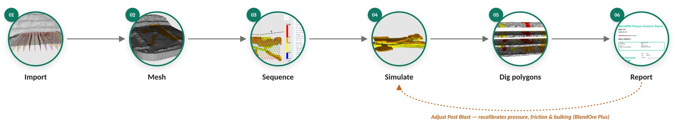
1.6 Conventions used in this document
| Convention | Meaning |
|---|---|
| Label | Text that appears in the interface exactly as written — a button, a menu entry, a field label, a dialog title. |
| Tools › Settings | A path through menus or ribbon groups. |
| E | A key you press. |
.str |
A file extension, a file name, a column name or a raw value. |
Screenshots illustrate the main dialogs and views.
Capabilities that belong to the BlendOre Plus package alone — that is, those not present in the BlendOre package — are marked Plus.
This manual describes version 0.9.6. Commands that exist in the source code but are not reachable in this version are not documented as features; where their absence is likely to be noticed, it is stated explicitly.
2Installation & First Steps
2.1 Requirements
| Requirement | Detail |
|---|---|
| Operating system | Windows 64-bit. The installer requires Windows Installer 5.0, i.e. Windows 7 / Server 2008 R2 or later. BlendOre is Windows-only: it stores its settings in the Windows registry and creates its output folder through Windows APIs. |
| Runtime | None to install. The MSI ships a self-contained bundle — no Python, no separate Visual C++ redistributable step. |
| Graphics | A 3D-capable GPU and an up-to-date driver. The whole interface is built on hardware OpenGL rendering; software rendering is workable only for very small datasets. |
| Memory | Not formally specified. Meshing and movement simulation are the memory-hungry steps; a survey point cloud is capped at one million points on import (section 4.2), which is the practical sizing guide. |
| Network | Access to https://explore.epc-groupe.com/ is needed when BlendOre revalidates your licence — roughly once every week or two, not at every start. See section 2.4. |
| Account | An Explore account that is a member of the BlendOre plus and/or BlendOre Predict group. |
| Privileges | None. BlendOre installs per user, so no administrator rights are needed. |
2.2 Installing BlendOre
BlendOre is distributed as a single signed MSI named BlendOre-<version>.msi — for this release, BlendOre-0.9.6.msi.
- Double-click the MSI. No elevation prompt appears — the install is per user.
- On the install-location page, accept the default or choose your own. The default is
%LOCALAPPDATA%\GTS-TOOL\BlendOre\. - On the Additional options page — “Select whether you want a Desktop shortcut.” — leave Create a Desktop shortcut ticked (it is ticked by default) or clear it.
- Confirm and install. A Start-menu shortcut named BlendOre is created under
GTS-TOOL\BlendOre.
Nothing is written outside the install folder until you first launch the application. On first launch BlendOre seeds its settings in the registry and creates a BlendORE_Output folder (section 12.4).
2.3 Updating
To update, download the newer BlendOre-<version>.msi and run it. It removes the previous version automatically and installs in its place. Your settings, grade colour bands, report authors and Explore session are stored separately and survive both an upgrade and an uninstall.
Installing an older MSI over a newer install fails with the message Une version plus récente de BlendOre est déjà installée. Uninstall the newer version first if you genuinely need to roll back.
2.4 Signing in to Explore
BlendOre has no licence key: your entitlement comes from your Explore account. You sign in the first time you run it, and again each time the licence is revalidated — roughly once every week or two. Between those checks BlendOre starts without a network connection.
- Launch BlendOre. A splash screen with the edition logo appears briefly.
- The LOG IN dialog opens. Enter your Username / Email and Password. The eye button at the right edge of the password field reveals what you have typed.
- Click LOG IN.
BlendOre authenticates against Explore, then reads your group memberships to decide which edition to open. If you belong to exactly one BlendOre group, that edition starts immediately.
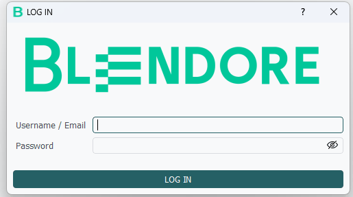
2.5 Choosing an edition
If your account belongs to both BlendOre groups, an extra dialog appears after a successful sign-in:
| Element | Text |
|---|---|
| Title | Edition Selection |
| Message | You have access to two BlendOre editions. Please select the edition to launch: |
| Buttons | BlendOre Plus · BlendOre · Cancel |
Your choice is remembered for the session and shown in the window title. Cancel returns you to the login dialog.
To switch editions later, close BlendOre and sign in again, or use Tools › Settings › General › Reconnect to Explore.
2.6 Sign-in problems
| Message | What it means | What to do |
|---|---|---|
| The email address and password do not match. Please try again. | Explore rejected the credentials, or the server could not be reached at all. | Re-type the password. If it is certainly correct, check that you can open https://explore.epc-groupe.com/ in a browser — a network or proxy block produces the same message. |
| Access denied | Your credentials are valid but your account is in neither the BlendOre plus nor the BlendOre Predict group. |
Ask your Explore administrator to add you to the appropriate group. |
| Nothing happens after LOG IN | The edition dialog may be waiting behind the main window. | Check the taskbar. |
If the application misbehaves at start-up, a log file named BlendOre.log is written next to the executable's working folder. It rotates at 5 MB and keeps three backups, and it is the first thing to send to support.
3The Interface
3.1 Layout overview
BlendOre opens maximised on the screen your cursor is on, inset by a 50 px margin. The window is divided into three vertical panes separated by draggable splitters.
| Region | Contains |
|---|---|
| Menu bar | Six menus: File, Edit, View, Filtres, Tools, Help. |
| Toolbar rows (top left) | Two stacked rows: commands on the first, display combos and the waste toggle on the second. |
| Ribbon (top right) | Four workflow tabs. See section 3.4. |
| Left pane | The object tree under the header File repertory :, the Launch BlendORE Simulation button, and the Properties / Informations tabs. |
| Centre pane | The 3D viewport, framed in teal. |
| Right pane | The Ore KPI : tab. |
Pane widths default to 200 / 600 / 400 px and are remembered between sessions — every drag of a splitter handle is saved immediately. The right-hand KPI pane can be collapsed entirely with Show/Hide Ore KPI Tab in the ribbon's Analytics group.
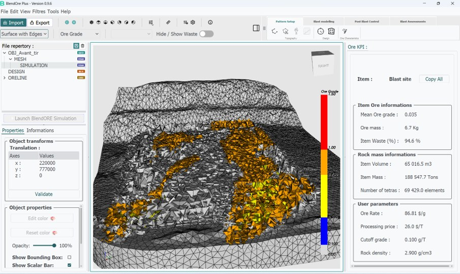
3.2 The menu bar
| Menu | Entries |
|---|---|
| File | Import File, Exit. |
| Edit | Select Points, Cut Points, Downsample data, Merge Point Cloud, Configure Layers, Correct polygon, Validate selection, Contour Cut, Automated Cut with Polygons, Automated Cut, Adapt to Bucket size, 2D Analysis, Show results, Delete Item, Rock characterization data, Select polygon points, Interpolate, Mesh 3D, Adjust Post Blast. |
| View | The seven camera presets: Home View, Top View, Bottom View, Left View, Right View, Front View, Back View. |
| Filtres | Threshold, Clip, Slice, Cell data to point data, Rescale Data. |
| Tools | Ruler, Show histogram, Update object vizualisation, Play, Stop, Configurate, Settings. |
| Help | About. |
3.3 The toolbars
Row 1 — commands
Left to right, with vertical separators between groups:
| Control | Action |
|---|---|
| Import (teal button) | Opens the Select File Type dialog — the single entry point for all data (chapter 4). |
| Export (white button) | Saves the whole project. Despite the name it does not export an individual object — see section 13.1 for that. |
| Play · Stop | Simulation animation playback (section 7.6). |
| Seven view buttons | The camera presets, same as the View menu. |
| Filter drop-down | Threshold, Clip, Slice, Cell data to point data, Downsample data, Merge Point Cloud, Rescale Data. |
| Ruler | Interactive distance measurement (section 11.8). |
| Configurate | The economic and rock parameters that drive every KPI (section 12.1). |
| Settings | The full settings dialog (section 12.2). |
| About | Version and edition information. |
Row 2 — display
| Control | Purpose |
|---|---|
| View mode combo | Surface, Wireframe, Surface with Edges, Points — how the selected object is drawn. |
| Mesh scalars combo | Which scalar array colours a selected mesh. Populated only when the mesh carries more than one scalar (section 11.1). |
| Object scalars combo | Which grade column colours a selected block model. |
| Hide / Show Waste toggle | Hides every cell below the cut-off grade, across all loaded meshes at once. Shortcut H. |
All three combos are disabled until an object that supports them is selected.
3.4 The ribbon
The ribbon on the right of the toolbar area groups commands by workflow stage. Buttons are icon-only; hover for the name and the requirements.
| Tab | Group | Commands |
|---|---|---|
| Pattern Setup | Topography | Select Points, Cut Points, Downsample data, Merge Point Cloud |
| Design | Time Sequences, Delimit polygons | |
| Ore Characteristics | Configurate STRs Ore | |
| Blast modelling | Mesh | Update object vizualisation, Mesh 3D |
| Geology | Rock characterization data, Select polygon points, Interpolate | |
| Post Blast Control Plus | Simulation | Adjust Post Blast |
| QAQC | Absolute distance Z, Euclidean distance X,Y,Z, Show histogram | |
| Blast Assessments | 3D Assessment | Configure Layers, Select Points, Cut Points, Correct polygon, Validate selection, Automated Cut, Contour Cut, Automated Cut with Polygons |
| Analytics | Adapt to Bucket size, Post-movement polygones, Point tracking, Show/Hide Ore KPI Tab | |
| Reporting | 2D Analysis, Show results, Movement Analytics |
3.5 The object tree
Everything you load or compute appears in the tree under File repertory :. Imported files become top-level rows; derived objects — meshes, layers, cuts, filter results, movement results — become children of the object they were made from, and the parent is expanded automatically.
Each row carries a coloured type badge on the right:
| Badge | Type | Object |
|---|---|---|
| GEO | geo |
Point cloud or surface — topography, post-blast survey. |
| BLS | design |
Blast design — holes, loading plan, delays. |
| MSH | mesh |
Tetrahedral model — the 3D ore model and everything derived from it. |
| ORE | Oreline |
Grade-control ore-line polygons. |
| BLK | blockModel |
Block model. |
Selecting objects
| Action | Result |
|---|---|
| Left-click a row | Selects it alone, clearing any other selection. |
| Ctrl + left-click | Adds the row to the selection. |
| Right-click | Selects the row and opens the context menu (a single entry, Delete). |
| Ctrl + right-click | Toggles the row in the selection, then opens the context menu. |
| Double-click the text | Renames the object. The name is used in exports and report headings. |
| Delete | Deletes the selected rows. |
Selection also drives the whole interface: nearly every command is enabled only for a particular combination of selected types. Section 14.3 lists them all in one table.
3.6 The Properties and Informations tabs
Properties
| Group / control | Purpose |
|---|---|
| Object transforms › Translation : | An editable table of the object's x, y, z offset. Validate applies the typed values and rebuilds the object. |
| Ruler | Appears only in ruler mode (section 11.8). |
| Clipper parameters / Slicer parameters | Appear only in clip or slice mode (sections 11.3–11.4). |
| Edit color · Reset color | Set a flat colour for the object. Disabled when the object carries scalars — colour then comes from the scalar map. |
| Point size : | 1–100, default 2. Point clouds only. |
| Opacity: | 1–100 %, default 100. |
| Downsample data | Reduces a point cloud in place (section 11.7). |
| Holes Info. · Explosive density · Explosive Catalogue · View Design | Design objects only (chapter 6). |
Below these sits a grid of display checkboxes:
| Checkbox | Default | Shown for |
|---|---|---|
| Show holes ID : | off | Designs |
| Hide cylinders : | off | Designs |
| Show isochrones | off | Designs — ticking it enters the sequence editor (section 6.3) |
| Show Bounding Box: | off | Any single selection |
| Show Scalar Bar: | on | Any single selection |
| Invert x and y axes : | off | Any single selection |
| Invert z and y axes : | off | Any single selection |
| Apply negative shift : | off | Any single selection |
| Show holes by ID : | off | Designs — opens a per-hole visibility panel over the viewport |
Informations
| Group | Field | Meaning |
|---|---|---|
| File Information | File Name : | The object's name as shown in the tree. |
| File Path : | Where it was loaded from. Derived objects show n/a. |
|
| Data Statistics | Vertices | Point count. Not filled in for a design — it keeps whatever the previously selected object showed, so read Number of holes instead. |
| Number of holes | Designs only. | |
| Volume Value (m3) : | Volume of the selected object, in m³. | |
| Selected Meshes Volume (m3) : | Sum over a multiple selection. Appears only when four or more objects are selected. | |
| Translation : | x / y / z | Read-out of the object's translation vector. |
3.7 Navigating the 3D view
| Input | Effect |
|---|---|
| Left-drag | Orbit the camera around the focal point. |
| Middle-drag | Pan. |
| Middle double-click | Re-centre the orbit pivot on the geometry under the cursor. Use this constantly — it is what stops the view swinging wildly on a large bench. |
| Right-drag | Dolly (zoom by dragging). |
| Scroll wheel | Zoom in / out. |
Two orientation aids are always drawn: an annotated cube in the top-right corner with faces labelled RIGHT, LEFT, FRONT, BACK, TOP, BOTTOM, and an X / Y / Z axes marker in the bottom-left. Neither can be clicked; the axes marker can be hidden from Settings › View › Hide Axis:.
The seven view presets frame the last-selected object. Home View restores the saved camera orientation rather than a canonical isometric, because the camera state is saved after every interaction.
A vertical colour bar sits at the right edge of the viewport whenever the selected object carries scalars. Its title is the scalar name and its range follows the lookup table — changed by Rescale Data or by switching scalars. Hide it per object with Show Scalar Bar:.
3.8 Keyboard shortcuts
All command shortcuts are bare single letters with no modifier, active whenever the main window has focus and no text field is capturing keystrokes.
| Key | Command | Type |
|---|---|---|
| E | Select Points | Toggle — enters and leaves polygon-drawing mode |
| C | Cut Points | One-shot — cuts with the polygon just drawn |
| L | Configure Layers | Opens the layer dialog |
| R | Show results | Opens the results window |
| H | Hide / Show Waste | Flips the toggle |
| Delete | Delete the selected tree rows | Requires focus in the tree |
| Ctrl+C | Copy the selection in a results table | Inside the results and 2D Analysis windows |
4Importing Data
4.1 The Import dialog
All data enters BlendOre through one command: the teal Import button on the toolbar, or File › Import File. It opens a dialog titled Select File Type with the prompt “Select the type of file to import:” and six radio buttons.
| Type | Accepted extensions | What it is |
|---|---|---|
| Geometry | .obj .stl .dxf .dtm .las .txt .csv |
The topographic point cloud or surface of the bench. Also used for the post-blast survey. |
| Design | .json .xlsx .csv |
The blast pattern: hole collars, toes, diameters, loading plan and delays. |
| Ore Line | .str .csv .txt .dxf |
Grade-control polygons. Multiple files can be selected at once. |
| Block Model | .csv |
A regular or sub-blocked model with grades and lithology. |
| Simulation | .vtu .vtk .blnd |
A previously computed tetrahedral model, with or without movement data. |
| Project | .bldr |
A complete saved BlendOre session (section 13.3). |
Geometry is pre-selected. Double-clicking a radio button accepts the dialog straight away; otherwise choose one and click Apply. A file browser titled Select File then opens, starting in the folder you last used.
.xyz and .asc for geometry, and .xml, .dxf, .txt and .str for designs.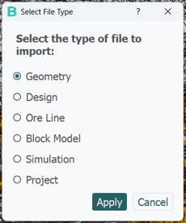
4.2 Geometry
The topography is the foundation of the whole study: it defines the top surface of the 3D model and, after the blast, it is what the prediction is measured against.
| Format | How it is read |
|---|---|
.csv .txt .xyz .asc |
Through the column mapper (section 4.7). You can map X, Y, Z, point intensity, R/G/B colour and a text label. |
.obj |
Vertices and faces. If a companion .mtl and its texture files are found next to the OBJ, a textured surface is built and the display mode is forced to Surface; otherwise vertex colours are used. |
.las |
X/Y/Z plus the LAS intensity field, which becomes the point scalar. |
.dxf |
Points, lines, polylines, 3D faces, circle and arc centres, and block insertion points. Polylines are kept and drawn as lines. |
.dtm |
Comma-delimited. Only rows with exactly eight fields are read, taking X, Y, Z from fields 2, 3 and 4. |
.stl |
ASCII STL only. A binary STL loads as an empty object with no warning. |
On a successful load the object appears in the tree named after the file, the Informations tab fills in the file name, path and vertex count, and the point cloud is drawn at point size 2.
bench_402.v2.csv appears in the tree as bench_402, and mesh.v2.vtu and mesh.v2.blnd both appear as mesh. Rename rows in the tree when you need to tell two objects apart.4.3 Design
The design carries far more than hole positions: BlendOre needs the loading plan and the delays to compute a pressure field, so the richer the design file, the better the simulation.
JSON — the reference format
The native format, and the one BlendOre writes back on export. It carries, per hole: hole number, collar and toe coordinates, diameter in metres, hole length, an empty-hole flag, the list of loading decks with their products and masses, and the firing delays in milliseconds. Air decks and stemming are recognised as non-blasting material.
Excel (.xlsx)
One header row, then one row per hole. Columns are matched by name, not by position — the matcher is case-insensitive, ignores spaces, hyphens and underscores, folds accents, and recognises English and French aliases. Four columns are mandatory:
| Role | Typical headers accepted | Error if missing |
|---|---|---|
| Hole number | Hole N, hole number, hole id, blasthole, trou, numero trou… |
Colonne Hole Number introuvable. |
| Depth | DEPTH, hole depth, PROFONDEUR, longueur forage… |
Colonne Depth/Profondeur introuvable. |
| Diameter | Diameter, diametre, diam, calibre… |
Colonne Diamètre introuvable. |
| Number of decks | nbSequence, sequence number, nombre de séquences… |
Colonne NbSequence introuvable. |
Collar and toe coordinates are read as three consecutive columns following an anchor header such as Pos TOP Trous / collar and Pos BOT Trous / toe. Loading and timing are read as runs of consecutive columns from their own anchors: up to nine ScriptConfig columns, up to nine Chargement (product) columns and up to three Time Sequence columns.
CSV
Goes through the column mapper with the design role set: Hole ID, Depth, Diameter, Collar X/Y/Z, Toe X/Y/Z, NbSequence, ScriptConfig 1…9, Chargement 1…9 and Time Sequence 1…3. All six collar and toe columns are mandatory. If Hole ID is left unmapped, holes are numbered 1…N.
1 — ScriptConfig 1, Chargement 1 or Time Sequence 1 — automatically assigns the following roles to the following consecutive columns. Map the first of each block and the rest fills itself in.After the design loads
- If the file carries a transformation matrix, a dialog titled Transformation Matrix : Apply ? shows it and asks whether to apply it.
- If no diameters were found, a dialog titled Set holes diameters (m) appears with the message “No diameter found in your file, set a diameter value (m) :”, pre-filled with
0.1. The accepted range is 0.01 to 0.5 m; a value outside it is silently reverted. The value you enter is applied to every hole. - Holes are sorted by ID, and each is seeded with the default explosive velocity and density from settings.
- The design is drawn as cylinders coloured by loading deck. Show holes ID :, Hide cylinders :, Holes Info. and Explosive density become available in the Properties tab.
4.4 Ore Line
Ore lines are the grade-control polygons: closed rings, one per ore body per bench level, each carrying an ore grade and usually a density. This is the most common way of getting ore geometry into BlendOre, and .str is the only ore-line format that carries grades.
The STR Column Configuration dialog
Every .str import opens a dialog titled STR Column Configuration showing a 20-row preview of the file with columns numbered Col 1, Col 2… Under Select Column Numbers, five spin boxes tell BlendOre which column is which:
| Field | Default column |
|---|---|
| X column: | 3 |
| Y column: | 2 |
| Z column: | 4 |
| OreGrade column: | 9 |
| Density column: | 6 |
Two checkboxes, No Ore Grade Column and No Density Column, disable the corresponding spin box and default those values to zero. All active column numbers must be distinct, otherwise you get Invalid Input / “All column numbers must be unique.”
How the file is read
Lines beginning with 0 separate one polygon from the next; every other line is a data row split on commas. A polygon's ore grade is the mean of its grade column and its density is the first density value found. Rows that cannot be parsed are skipped without a message.
|) as separators, but the reader itself accepts only commas. A pipe-delimited file therefore looks perfectly mapped in the dialog and produces an empty ore line, with no error. Convert it to comma-delimited first.BlendOre then groups the polygons into bench levels by their mean Z and derives a layer height per level from the spacing between levels. This is what makes an ore line three-dimensional: each polygon becomes a prism, extruded up or down by its layer height (section 9.2).
Pre-blast or post-blast?
Every ore-line import ends with a question box:
| Element | Text |
|---|---|
| Title | Ore Line Creation |
| Question | Is the ore line before the blast or a post blast ore line? |
| Buttons | Preblast · Postblast |
Answer honestly: this tag is what the 2D Analysis report uses to pair the two geometries. Dismissing the box without choosing defaults to Preblast.
How ore lines appear in the tree
An ore line becomes a small hierarchy: a root row named after the file, one child per bench level named Z = <value>, and one grandchild per polygon under each level. Selecting a Z = … node is what enables Configurate STRs Ore (section 9.9).
.str carries grades. An ore line imported from .csv, .txt or .dxf collapses to a single polygon with grade 0 and no layer height. Those formats are useful for boundaries, not for grade control..str files at once, BlendOre compares the column count and delimiter of the first data line of each. Any mismatch aborts the entire load with Error / “The following files have a different structure from the first file: … Loading aborted.” Load odd files separately.4.5 Block Model
A block model is the alternative to ore lines: a table of block centres with sizes, grades and lithology.
On opening the file BlendOre asks How do you want to open the CSV file ? with two buttons:
Load automatically
BlendOre sniffs the delimiter, tries three encodings, and recognises the column naming conventions of the major mine-planning packages:
| Package | Coordinate columns | Convention |
|---|---|---|
| Datamine | XC, YC, ZC / XINC, YINC, ZINC |
Centroid |
| Vulcan | Easting, Northing, Elevation or RL |
Centroid |
| MineSight | X_Orig, Y_Orig, Z_Orig |
Centroid |
| GEMS | X_BLK, Y_BLK, Z_BLK |
Centroid |
| Leapfrog Geo | X, Y, Z / size(X), size(Y), size(Z) |
Lower corner → corrected by +size/2 |
| Surpac | X, Y, Z / size_x, size_y, size_z |
Lower corner |
| Regular model | Coordinates only, no size columns | Block size inferred from the spacing between blocks |
Detection works from the names of the columns. A file whose coordinates are plain X, Y, Z with no recognised size-column names produces no match at all; BlendOre then reports an unknown format and offers manual mapping.
The guess is verified statistically on a sample of up to 5 000 rows, and flipped automatically if the data contradict it. Every remaining column is classified: the first text column (or any column whose name suggests geology) becomes the lithology, columns named like a density become the density, and everything else numeric becomes a selectable grade.
A summary box titled Block Model then reports the detected format, the convention, the coordinate and size columns, the block count, a reliability percentage and the grades found. Read it. A reliability below 60 % is flagged with a warning triangle and means the convention should be checked by hand.
Choose colums manually
Opens the column mapper with a block-model panel at the top offering three conventions:
| Option | Meaning |
|---|---|
| A — Centroid (XC / YC / ZC) | Coordinates are block centres. Default. |
| B — Lower corner (X / Y / Z) | Coordinates are the lower corner; half the block size is added. |
| C — Regular grid | Centroids with no size columns; the size is inferred from the data. |
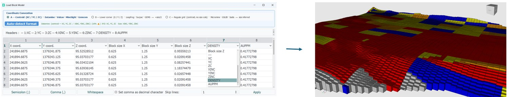
The Auto-detect format button runs the same detection and pre-fills the mapping for you. X, Y and Z are always mandatory; the three block-size columns are mandatory unless you chose convention C.
Once loaded, the object-scalars combo on toolbar row 2 lets you pick which grade column colours the model. That choice matters: it is the grade that Mesh 3D will carry into the 3D model (section 5.4).
4.6 Simulation
Use this to reopen a tetrahedral model computed earlier.
| Format | Contents |
|---|---|
.blnd |
BlendOre's own container. Carries points, cells, all scalar arrays with their labels, the displacement field, and optionally the full velocity history that makes animation possible. |
.vtu / .vtk |
Standard VTK. Only tetrahedral cells and only cell data are read — a surface mesh or a point-data file loads with no connectivity and no scalars. |
On load the KPIs are recomputed with your current ore price, processing price, rock density and cut-off grade, the mesh scalar combo is set to Ore Grade, and the Ore KPI : tab fills in.
4.7 The CSV column mapper
Several import paths open the same mapping dialog. It shows the first 20 rows of the file in a table whose first row is a set of drop-down boxes — one per column of the file — where you say what each column contains.
| Control | Purpose | Default |
|---|---|---|
| Semicolon (;) / Comma (,) / Whitespace | Field delimiter. Changing it re-reads the preview immediately. | Semicolon |
| Set comma as decimal character | For files using 1,25 rather than 1.25. |
off |
| Skip lines: | Number of leading lines to ignore (banner or unit rows). | 0 |
| Apply | Validates the mapping and loads. | — |
Roles are unique: assigning a role that is already used elsewhere resets the other column to Ignore. For geometry files, if there are at least three columns the first three are auto-assigned to X, Y and Z.
Validation messages, all in a box titled Warning:
| Context | Message |
|---|---|
| Geometry, ore line, tracking points | Please, select the vertices 3 axes coordinates. |
| Design | Please, select the collar 3 axes coordinates. · Please, select the toe 3 axes coordinates. |
| Block model | Please, select the vertices 3 axes coordinates. · Please, select the block size for all 3 axes. |
| Empty or unreadable file | Title Empty file — The file is empty or cannot be read. |
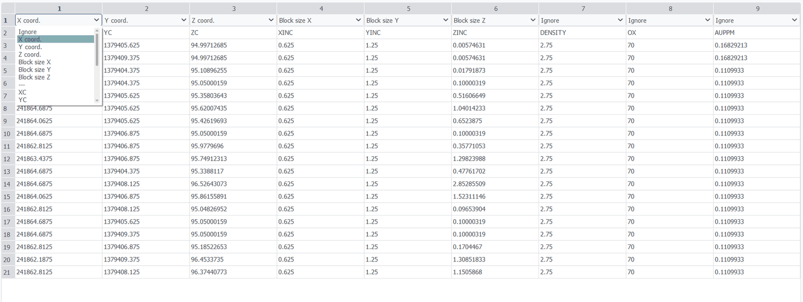
4.8 The translation vector
Every import that carries coordinates ends with a question box titled Validate:
| Body | Translation vector : X: <value> Y: <value> Z: <value> Do you validate translation values ? |
| Buttons | Yes (default) · No |
Mine grids use very large coordinates — easting in the hundreds of thousands, northing in the millions. Rendering geometry at those absolute values causes visible precision artefacts, so BlendOre subtracts an offset and works in local coordinates, restoring the offset on export.
5Building the 3D Ore Model
5.1 What the mesh is
Mesh 3D is the pivotal command in BlendOre. It converts a topographic surface and a set of ore geometry into a tetrahedral volume model of the rock about to be blasted: a solid bounded above by the topography, below by a floor elevation you choose, and laterally by the extent of the survey (or, when a design is selected, by a buffer around the blast pattern).
Every tetrahedron in that solid carries an ore grade, taken from the ore polygon or block it falls inside. This is the object that the movement solver throws, that layers are cut from, and that all KPIs are computed on. Nothing downstream works without it.
5.2 Preconditions
Mesh 3D is disabled at start-up and re-evaluated every time the selection changes. Select, in the tree:
| Selection | Result |
|---|---|
| 1 GEO + 1 ORE | Conformal ore mesh over the whole survey extent. |
| 1 GEO + 1 BLK | Conformal ore mesh from the block model. |
| 1 GEO + 1 BLS + 1 ORE | Conformal ore mesh, clipped to a buffer around the blast pattern. |
| 1 GEO + 1 BLS + 1 BLK | As above, from the block model. |
| 1 GEO alone | A plain volume mesh with no ore grade. Useful for volumes; not usable for dilution. |
| 1 GEO + 1 BLS | A plain volume mesh with no ore grade, clipped to a buffer around the blast pattern. |
Selection order does not matter. Any other combination leaves the command greyed out, with no message explaining why — if Mesh 3D is dim, count your selected rows and check their badges.
5.3 The Make Mesh dialog
The dialog is titled Make Mesh. Which fields appear depends on what you selected.
Always shown
| Field | Control | Default | Range | What it does |
|---|---|---|---|---|
| Characteristic Length (m) | Slider | 2.5 m | 1.2–3.5 m | The target edge length of a tetrahedron — the resolution of the whole model. Smaller means finer detail and a much slower simulation. |
| Minimum Z (m) | Spin box | 130 m | −1000 to 5000 | The floor of the model. Set it at or just below the design toe elevation. |
When a design is selected
| Field | Default | Range | What it does |
|---|---|---|---|
| Max Cutting Distance (m) | 20 m | 10–50 m, step 5 | The point cloud is clipped to the convex hull of all hole collars and toes, expanded by this distance. Keeps the model to the blast and its immediate surroundings. |
| Mean toe from design | read-only | — | The mean toe elevation of the design. Use it as a sanity check for Minimum Z (m). |
Ore Line Parameters
Shown when the ore geometry is an ore line.
| Field | Default | What it does |
|---|---|---|
| Extrusion direction | ⇓⇓ Downward (Z → Z−h) | Whether a polygon's Z is the top of its layer (downward) or the bottom (upward). See section 9.2 — getting this wrong shifts your whole ore body by one bench height. |
| Layer height | 2.5 m, or the mean of the ore line's own layer heights when available | How far each polygon is extruded, in metres. |
| Cutoff grade | the current cut-off (0.0 out of the box) | Polygons at or below this grade are not meshed as ore at all. |
Block Model Parameters
| Field | Default | What it does |
|---|---|---|
| Cutoff grade | the current cut-off | Blocks at or below this grade are excluded. |
| Meshing mode › Exact grade | selected | Every distinct grade value becomes its own domain in the mesh. Most faithful, most elements. |
| Meshing mode › Grade classes | — | Blocks are merged within the grade bands configured in Settings › Thresholds / Colors. Far fewer elements; use it when a sub-blocked model produces an unworkable mesh. |
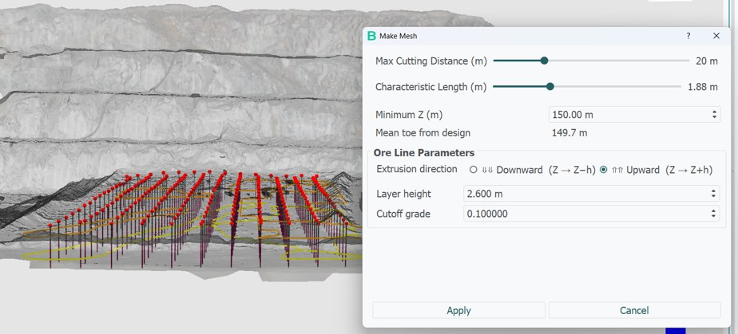
Click Apply. A Processing progress dialog appears; meshing a production bench typically takes from tens of seconds to a few minutes.
5.4 How grade is attached
Grade assignment is geometric containment, not geostatistical interpolation. BlendOre computes the centroid of every tetrahedron and asks, for each ore polygon or block in turn: is this centroid inside the polygon in plan, and inside its vertical slab?
- The vertical slab of a polygon at elevation
Zwith heighthis[Z−h, Z]downward, or[Z, Z+h]upward. - A block model block becomes a rectangle at its top face with the block's own height, always downward.
- Tetrahedra inside no polygon keep grade 0.0 — they are waste.
5.5 Reading the result
The new mesh appears as a child of the topography, named <topography name>_mesh_1 (then _2, _3…). It is coloured by Ore Grade using the bands from Settings › Thresholds / Colors, and the Ore KPI : pane fills with its volume, tonnage, mean grade, dilution and profit.
Check the model before going further:
- Switch the view-mode combo to Surface with Edges and confirm the element size looks right for the bench.
- Set a non-zero cut-off in Configurate and press H to hide waste — the remaining shape should be recognisably your ore body.
- Compare Item Volume : and Item Mass : in the KPI pane against your own bench estimate.
If meshing fails
The conformal mesher refuses to produce a result it cannot trust rather than silently falling back to a plain mesh. The message names the cause; the common ones are:
| Message contains | Cause and fix |
|---|---|
| “no Ore Line polygon with a scalar strictly greater than the selected cutoff” | Every polygon is at or below the cut-off. Lower Cutoff grade in the dialog. |
| “Ore Line polygon is self-intersecting or has negligible area” | A bow-tie or degenerate ring in the STR. Repair it in your grade-control package. |
| “more than 6000 atomic regions” | Too many overlapping levels at once. Load fewer bench levels, or simplify the contours. |
| “Block Model blocks … overlap volumetrically” | Duplicated or overlapping blocks in the CSV. De-duplicate before importing. |
| “No active Block Model block intersects the blast geometry in 3D” | The model does not overlap the bench — usually a coordinate-system or translation mismatch (section 4.8). |
| “did not create a valid closed volume” | The topography boundary is degenerate or has duplicated points in plan. Downsample the cloud, or trim its ragged edges with Select Points / Cut Points first. |
BlendOre.log holds the same information if you need to send it on.5.6 Geology polygons
The movement solver treats the rock mass as uniform by default. If part of the bench is materially different — a weathered zone, a clay seam, a harder domain — you can mark it out and give it its own density and damping.
The two commands live in the ribbon under Blast modelling › Geology. Both require exactly one mesh selected.
- Select the mesh, then tick Select polygon points. The camera snaps to top view.
- Left-click in the view to place each vertex of the zone. The Z of your first click is frozen for all the others, so the polygon is horizontal. The last vertex follows the cursor until you click again.
- Right-click to close the polygon. Interpolate becomes visible — this is the only way it appears.
- Click Interpolate. A dialog titled Interpolate data opens with Z_min and Z_max bounds and a small table:
| Label | Value | Default value | Unit |
|---|---|---|---|
| Rho (T/m3) | 2.0 | 2.5 | tonnes per cubic metre |
| Friction (Pa.s-1) | 0.2 | 0.5 | damping |
The Value column applies inside the polygon; the Default Values column applies everywhere else. 5. Press Validate. Tetrahedra inside the polygon and between the two Z bounds take the new values.
Middle-drag still pans while you are drawing. Un-ticking Select polygon points abandons the polygon.
5.7 Rock characterization
Rock characterization data opens a reference catalogue titled Rock Parameter Selector — 230 rock types, each with up to 37 published geotechnical parameters: density, Young's modulus, Poisson ratio, UCS, tensile strength, RMR, GSI, Q Barton, RQD, friction angle, porosity and so on.
Pick one or more rocks in the list on the left (or press Select All) and the table on the right shows one column per rock and one row per parameter. Export to Excel writes the table to an .xlsx file.
100 - 250) and are not validated.6Design & Time Sequences
6.1 Inspecting the design
With a single design selected, four buttons appear in the Properties tab.
Holes Info.
A read-only table of the whole pattern, paginated ten holes per tab with tabs named Holes 1 → 10, Holes 11 → 20 and so on. Holes are the columns and properties the rows:
| Row | Contents |
|---|---|
| Depth (m) | Hole length, 3 decimals. |
| Diameter (m) | Hole diameter, 3 decimals. |
| Nb of Seq. | Number of detonator levels (decks) in the hole. |
| CONFIGURATION | A section heading. |
| Type / Length | One pair per loading deck, collar to toe — the product name and the deck length in metres. |
This is the fastest way to confirm that a design imported from Excel or CSV actually carried its loading plan. A hole showing Nb of Seq. but no Type / Length rows will contribute nothing to the simulation.
Explosive Catalogue
Opens Catalogue of All Explosive Products, a reference list with columns Product ID, Full Name, Density, Detonation Speed, Shock Energy, Gaz Energy, Total Energy, Water Proof and Pression Theorique. Values not present in the catalogue show as -.
View Design
Opens Blasting Design Information: a grid of one button per hole; clicking a hole shows each of its loading decks with the product, length in metres, mass in kg, density, theoretical pressure in GPa and detonation velocity in m/s, beside a proportional colour schematic of the column.
6.2 Explosive density per hole
The simulation drives everything from the initial detonation pressure, so the explosive properties matter as much as the geometry. Explosive density — reachable from the Properties tab or from a button inside the Calculate Movement dialog — lets you override them hole by hole.
| Column | Editable | Meaning |
|---|---|---|
| Hole ID | no | The hole. |
| VoD (Km/s) | no | Velocity of detonation as loaded. |
| Density (g/ml) | no | Density as loaded. |
| Density Updated | yes | Your corrected density. |
| Theo. Mass (kg) | no | Theoretical charge mass, recomputed from the updated density and the hole geometry. |
| Real Mass (kg) | yes | The mass actually loaded, from the shot report. |
| Theo. Pressure(GPa) | no | Detonation pressure, recomputed as ρ × VoD² / 8. |
Buttons: Load density/real mass imports a CSV of per-hole values, Reset restores the loaded values, Validate commits.
Once you have set per-hole pressures, the checkbox Consider load config. initial pressure in the Calculate Movement dialog becomes available. Ticking it makes the simulation use each hole's own pressure and disables the single global Initial Pression (GPa) field.
6.3 Entering the sequence editor
Time Sequences is a toggle in the ribbon under Pattern Setup › Design. It is enabled only when a single design is selected. Ticking the Show isochrones checkbox in the Properties tab does the same thing — the two are bound together.
On entry BlendOre hides the hole cylinders and snaps to top view, then asks you to orient the view before it will open the editor. A box titled Camera Alignment - Top View appears with the instruction:
*Click two points to define the view orientation: From right to left at the free face of the blast.
Right-click to cancel.*
Click the two points in the 3D view. A Camera Aligned confirmation follows, and only then does BlendOre draw the timing isochrones, open a dock titled Edit sequence on the right, and lock the camera against rotation (zoom and pan still work). The Ore KPI : pane is collapsed to make room.
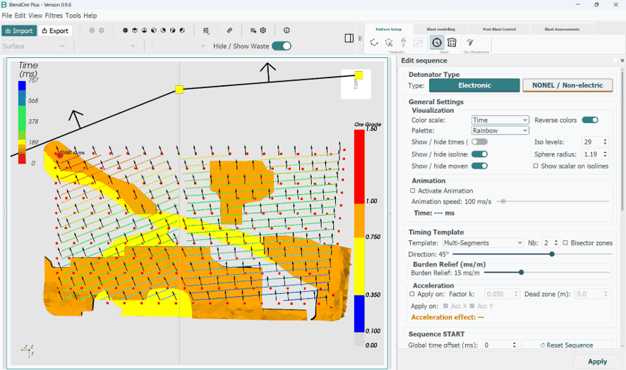
The panel is titled Configure sequence timing and is organised top to bottom in workflow order. The first choice is the technology:
| Group | Control | Default |
|---|---|---|
| Detonator Type | Electronic | selected |
| NONEL / Non-electric | — |
The rest of the panel changes with that choice. Common to both are the display and animation controls:
| Group | Control | Default | Range |
|---|---|---|---|
| Visualization | Color scale: | Time | Time or Effective burden relief (electronic only) |
| Reverse colors | off | — | |
| Show / hide times (ms) | off | — | |
| Show / hide isolines | on | — | |
| Show / hide movement vectors | on | — | |
| Iso levels: | 15 | 3–150 | |
| Sphere radius: | computed from the pattern | 0.1–10.0 | |
| Animation | Activate Animation | off | — |
| Animation speed | 100 ms/s | 25–2000 ms/s |
6.4 Electronic timing
In electronic mode you do not type a delay per hole. You choose a timing template — a spatial field — and BlendOre computes each hole's delay from its position within that field.
Timing Template
| Control | Default | Range | Effect |
|---|---|---|---|
| Template: | Arrow / V | Arrow / V, Multi-Segments, Elliptic cone | The geometry of the firing front. |
| Nb: | 2 | 1–10 | Number of segments. Multi-Segments only. |
| Direction: | 45° | −180 to 180° | The bearing the blast progresses along. |
V-Wings — Arrow / V only
| Control | Default | Range | Effect |
|---|---|---|---|
| Link L/R | on | — | Keeps both branches symmetric. Un-tick for an asymmetric V. |
| Wing (or Right / Left) | 45° | 0–89° | Opening of the V. 0° is a straight row-by-row front; 45° is the classic V. |
| Right (ms): | 0.0 | ±500 ms | Extra delay on the right-hand quadrants. |
| Front (ms): | 0.0 | ±500 ms | Extra delay on the front quadrants. |
Burden Relief
This is the single most important timing parameter: the delay gradient in milliseconds per metre along the direction of progression. It is what a drill-and-blast engineer would otherwise express as hole-to-hole and row-to-row delays.
| Control | Default | Range |
|---|---|---|
| Burden Relief (or Right / Left) | 10 ms/m | 1–50 ms/m |
| Link L/R | on | — |
A low value fires the pattern quickly across the ground; a high value spreads it out. Un-linking left and right lets one flank progress faster than the other.
Acceleration
Optional. Curves the timing field so the front speeds up or slows down as it advances.
| Control | Default | Range |
|---|---|---|
| Apply on: | off | — |
| Factor k: | 0.05 | −0.300 to 0.300 |
| Dead zone (m): | 0.0 | 0.0–200.0 m |
| Acc X / Acc Y | both on | — |
A read-out shows Acceleration effect: max Δ <n> ms so you can see how much difference the curvature makes. Positive and negative k curve in opposite directions; 0 removes the effect. Acceleration is unavailable with the Elliptic cone template.
Sequence START and level delays
| Control | Default | Effect |
|---|---|---|
| Origin: | First Hole | Where the template is anchored: Centroid, First Hole, or Custom (then Pick point in the view). |
| Global time offset (ms): | the sequence's own start | Shifts every delay equally, preserving all intervals. |
| Deck / level: | All levels | Which detonator level the panel is showing. |
| Inter-level delay (ms): | 8.0 ms | Delay between consecutive decks in the same hole. Disabled when every hole has a single deck. |
| Minimum interval (ms): | 8.0 ms | Minimum allowed gap between consecutive firing times across the pattern. Enforced live. |
| Force equal gaps | off | Also compresses gaps larger than the minimum, pushing towards a uniform interval. |
| Sequence range: | read-only | The current first and last firing times, after everything above is applied. |
↺ Reset Sequence restores the sequence as it was when the editor opened.
6.5 NONEL timing
In NONEL mode you build a connector network by hand: pick a surface connector delay, then draw connections between holes in the 3D view. Each hole's firing time is its parent's time plus the connector delay, propagated outward from the starting hole.
| Group | Control | Notes |
|---|---|---|
| Delay Times | 17 ms · 25 ms · 42 ms · 65 ms · 100 ms | The standard connector catalogue. Each has its own colour in the view. |
| … | Opens Manual Connector — “Enter delay (ms):”, default 50, range 1–5000 ms. | |
| Drawing Options | Straight Line | Draws one connection as a straight chain through the holes you cross. |
| Repetition | Repeats the drawn pattern in neighbouring rows. Mutually exclusive with Straight Line. | |
| Both ↑↓ · Upward ↑ · Downward ↓ | Repetition direction. Enabled once Repetition is ticked; Both ↑↓ is the default. | |
| Visibility | Show Delay Spheres: | off |
| Show Connectors: | on |
Use Pick hole in view to nominate the starting detonator; its label then reads Hole n (x, y). With a connector armed, drag the left button to draw the connection. Camera rotation is suspended during the stroke; the wheel and the right and middle buttons still work.
↺ Reset Sequence in NONEL mode asks for confirmation, then clears every connection and returns all holes to unconnected.
6.6 Converting between the two
Both directions are available, and neither is destructive — you can always convert back.
NONEL → Electronic
The button → Electronic (Keep Timings) promotes the NONEL timings to an electronic sequence. This direction is exact: the delays are simply reinterpreted. Holes you left unconnected are assigned the mean delay of the connected ones, so the electronic field is fully defined.
Electronic → NONEL
The button → NonEL (Auto) works out a connector network that reproduces the electronic timing as closely as the standard connector delays allow. It builds a spatial neighbour graph, works through the holes in firing order, and for each one picks the parent and catalogue delay whose sum lands closest to the target time.
The result box reports the quality:
| Status | Meaning |
|---|---|
| Exact | Every hole matched within 0.5 ms. “All holes matched exactly.” |
| Approximate | Reports mean error, max error, RMSE and the number of neighbour pairs whose firing order was inverted. |
| Failed | No holes could be assigned. |
6.7 Statistics, export and apply
The group Sequence Statistics summarises whatever is currently displayed: Holes:, Total (ms):, Min gap (ms):, Max gap (ms):, Mean (ms): and Std (ms):. Watch Min gap (ms): against your minimum-interval rule.
Exporting Sequence › Export CSV writes one row per hole per detonator level with the header Hole_ID,Level,X,Y,Z,Delay_ms. A hole with no level is written with level 0 and delay −1.
Finally, Apply commits the sequence.
<design name>_New_Seq carrying the new timings, and leaves the original untouched. Select the new object when you run the simulation.6.8 Delimit polygons
Delimit polygons (ribbon: Pattern Setup › Design) builds the blast contour — the outline of the pattern — and optionally trims your ore lines to it, so the ore geometry covers exactly the ground the blast will move.
Select the design, and optionally an ore line as well. A dialog appears:
| Element | Text / value |
|---|---|
| Title | Blast Contour Buffer |
| Question | Do you want to apply a buffer to the blast contour? |
| Buffer size (m): | default 0.5 m, range 0–9999 m, step 0.1 |
| Clip polygons to contour (create new points) | ticked |
| Buttons | Yes · No (default) |
The contour is the convex hull of every collar and toe position in plan, expanded outward by the buffer. With the checkbox ticked, each ore polygon is intersected with the contour and new vertices are created where it crosses; with it cleared, a polygon that touches the contour is kept whole and one that misses it entirely is dropped.
The trimmed ore line appears as a new object named <original name>_delimited, keeping the same bench-level structure and per-polygon grades.
BlendOre then offers to save the contour itself: “Do you want to save the blast contour?”, then Select Format with buttons TXT and STR. Both write one line per contour vertex, with Z set to the mean collar elevation.
7Movement Simulation
7.1 Preconditions
The simulation is launched from the large green Launch BlendORE Simulation button between the object tree and the Properties tabs. It is disabled until the selection is right:
| Selection | Notes |
|---|---|
| 1 MSH + 1 BLS + 1 ORE or BLK | The full case. The grade is re-interpolated from the ore geometry. |
| 1 MSH + 1 BLS | Allowed when the mesh already carries an Ore Grade scalar — i.e. it came from Mesh 3D with ore geometry. The cached grade is reused, which is faster. |
Two runtime checks can still stop the run after you press Apply:
| Message | Cause |
|---|---|
| Attention — We are missing key design data: sequence, diameter, configuration, and other required details. | The design has no loading plan. Check it in Holes Info. (section 6.1) and re-import with the loading columns mapped. |
| Error — No valid positive hole diameter is available for movement interaction. | Every diameter is zero or missing. Re-import and set a diameter when prompted (section 4.3). |
7.2 The Calculate Movement dialog
The dialog is titled Calculate Movement.
Rock properties
| Field | Default | Range | Meaning |
|---|---|---|---|
| Rock Density (T/m3) | 2.5 | 1.5–3.5 | In-situ density of the rock mass. |
| Rock friction / damping (Pa.s-1) | 0.5 | 0.1–0.8 | How quickly the blast energy is absorbed with distance. Higher means less throw. |
| Consider rock density from orefile | off | — | Uses the per-polygon densities from the ore line instead of the single value above. |
| Compaction (≤1) / Swell - Bulking (≥1) vertical factor (Z) | 1.4 | 0.1–2.0 | Vertical bulking. Above 1 the muckpile swells and heaves; below 1 it compacts. |
Explosive properties
| Field | Default | Range |
|---|---|---|
| Density of explosive (g/ml) | 1.20 | 0.01–3.00 |
| Velocity of Detonation (Km/s) | 5.00 | 0.10–12.00 |
| Initial Pression (GPa) | 3.75 (computed) | 0–1000 |
| Consider load config. initial pressure | off | — |
The Explosive density button beside the checkbox opens the per-hole table of section 6.2. Once per-hole pressures exist, ticking Consider load config. initial pressure makes the simulation use them and disables the global field.
Ore geometry
When the ore source is an ore line, two more controls appear: a read-only Height Polygons : showing the mean layer height, and the Polygon Orientation radios (↓↓ Z+ (Upper level) / ↑↑ Z- (Bottom level)) described in section 9.2. Both are hidden for a block model, which carries its own block heights.
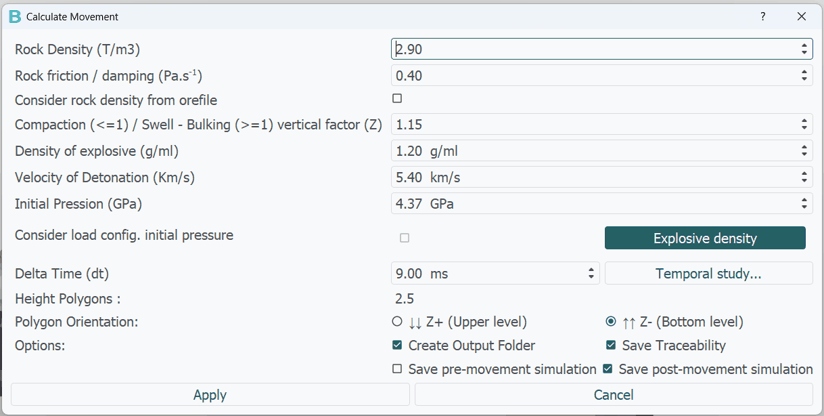
7.3 Choosing the time step
Delta Time (dt) sets the integration step of the solver, in milliseconds. Range 0.01–100 ms; BlendOre pre-fills a value computed from your own timing sequence, hole positions and diameters.
The trade-off is not just speed versus accuracy. The step must be short enough that two holes close enough to interact do not detonate within the same step, or the blast will behave as if they were simultaneous.
The Temporal study... button opens a dedicated window — Temporal study - time step (dt) selection — that makes this visible:
| Panel | Shows |
|---|---|
| Left, full height | The pattern in plan, holes coloured by detonation time, with a line joining every spatially close pair. Pairs in conflict with the current dt are drawn in thick red. |
| Top right | Nearby detonations per time step. Markers turn red where more than one nearby hole shares a step. |
| Bottom right | A histogram of the time gaps between spatially close pairs, with the current dt marked in red dashed and the suggested dt in green dotted. |
A summary line reads “<n> detonations | <n> nearby pairs | <n> pairs in conflict | <n> steps shared by >1 nearby detonation”. Drag the slider (2–50 ms) and watch the red lines appear and disappear.
Auto suggestion (<n> ms) picks the largest dt that stays coherent for the large majority of interacting pairs. It works from the gap distribution rather than the single smallest gap, so a handful of unusually tight pairs do not drag the whole simulation down. Apply this dt writes the value back into the movement dialog.
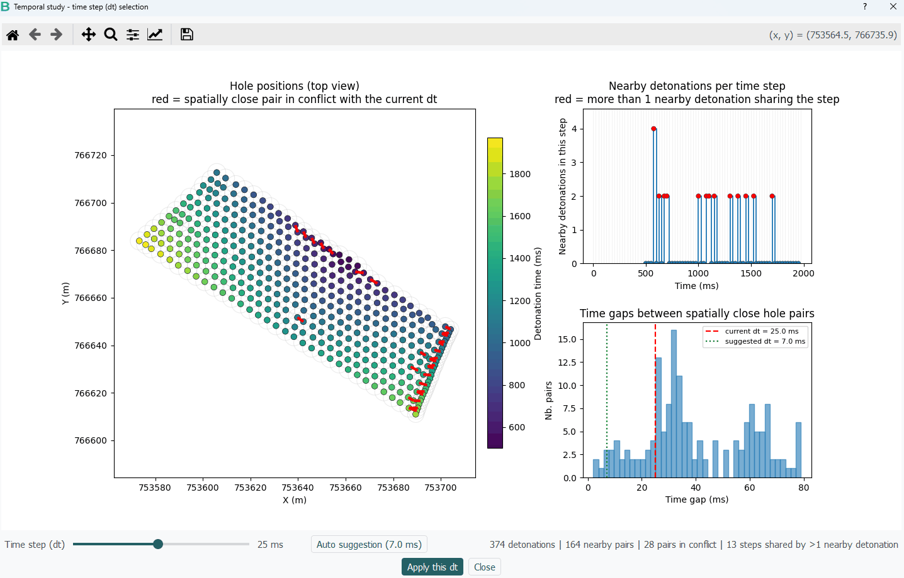
7.4 Output options
| Checkbox | Default | Effect |
|---|---|---|
| Create Output Folder | on | Creates a folder for this run under BlendORE_Output. Master switch for the three below. |
| Save Traceability | off | Writes simulation_log.txt with every parameter used and the full progress log. |
| Save pre-movement simulation | off | Writes the pre-blast mesh as <name>_Pre_Move.blnd. |
| Save post-movement simulation | on | Writes the result mesh as <name>.blnd. |
The two “save simulation” options are not remembered between sessions: they reset to off (pre) and on (post) each time you start BlendOre.
7.5 Running and results
A progress dialog reports the stages: the pressure distribution, the ore-grade interpolation, the movement field, then the interaction solver (which occupies most of the run), then the displacement field and the KPIs. Expect minutes to tens of minutes depending on element count and time step.
On completion an information box gives the elapsed time and the output folder, and a new object appears as a child of the mesh:
| Object | Contains |
|---|---|
<mesh name>_Move_Predict |
The post-blast model: displaced geometry, the displacement vector per tetrahedron, the full velocity history that enables animation, and the ore grade. |
| The parent mesh | Updated in place with pre-movement KPIs, tagged as the Blast site, and now carrying three scalars: Rho (T/m3), Friction (Pa.s-1) and Ore Grade. |
The _Move_Predict object is what you take into chapter 9 to cut layers and dig polygons.
7.6 Animation playback
Select a mesh that carries simulation data and the Play and Stop buttons on toolbar row 1 become available. Play animates the actual movement of the rock, replaying the stored velocity history frame by frame.
A compact overlay appears at the top of the viewport with a frame counter, a progress bar, a speed slider (5 to 500 fps; the default is about 20) and an fps read-out. Play becomes Pause while running — pausing keeps your position, Stop resets to the start.
.blnd file, or if you are looking at a layer whose parent was never simulated, you will get one of these warnings: “No animation data (V_Real) available for this mesh.” or a message explaining that the pre-movement archive is missing. Select the original simulation result, or a cut derived directly from it.8Post-Blast Control
8.1 What it does
A prediction is only as good as its calibration. Adjust Post Blast closes the loop: it takes the muckpile you actually surveyed after the blast, compares it against the surface the simulation predicted, and does two things with the difference.
- Corrects the model. The surface discrepancy is propagated down into the tetrahedral volume, so the corrected model puts the ore where the measured surface says it is — and the dig polygons you cut from it are correspondingly better.
- Re-calibrates the physics. It works backwards from the discrepancy to adjust the initial pressure, the friction and the bulking factor, and writes them into your settings. Your next prediction on a similar bench starts from measured behaviour rather than from generic defaults.
8.2 Preconditions
Select exactly two objects:
- the MSH movement result — the
_Move_Predictobject, which must carry a displacement field; - the GEO surveyed post-blast point cloud.
Anything else gives Invalid selection / “Please select one mesh and one geo.”
8.3 The parameters dialog
Titled Post-blast correction parameters.
| Field | Default | Range | What it controls |
|---|---|---|---|
| LC: Simulation mesh characteristic length (m): | your last meshing value (2.5 m) | 0.10–100.00 | Sets the depth over which the surface correction fades into the volume. It should match the value you meshed with. |
| Minimum Z | your last meshing value (130) | −1000 to 5000 | The floor of the model, as in Mesh 3D. |
| Voxel size for REAL post-blast downsampling (m): | 0.050 m | 0.010–0.300 | How much the surveyed cloud is thinned before matching. Roughly two to three times your scan point spacing is a good choice. |
| Smooth sigma XY (m) [TOP residual smoothing radius]: | 0.200 m | 0.050–2.000 | How much the surface discrepancy is smoothed before being applied. Larger values suppress survey noise but also real detail. |
| K-Top XY (neighbors for TOP->volume interpolation): | 4 | 1–12 | How many surface points contribute to correcting each interior element. |
Click Apply. The LC and Minimum Z values are saved to your settings.
The result
A progress dialog runs while the correction is computed. When it finishes, a new object appears beside the prediction, with Predict in its name replaced by Corrected. It inherits the ore grade and all the KPIs, and it is the object you should cut dig polygons from.
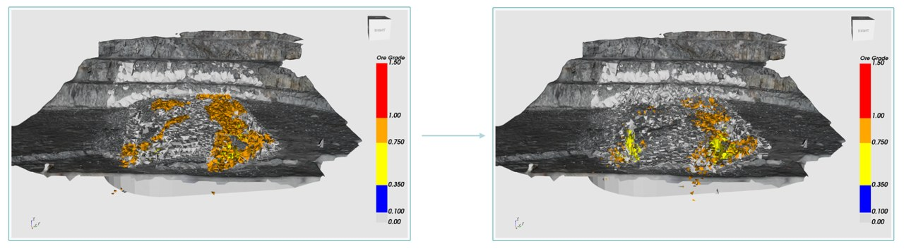
8.4 Parameter re-calibration
Alongside the corrected model, BlendOre derives two relative errors from the surface discrepancy — one horizontal, one vertical — using median statistics over the elements that moved significantly, and updates three settings:
| Parameter | Adjusted | Clamped to |
|---|---|---|
| Initial Pression (GPa) | Up if the real movement exceeded the prediction, down if it fell short. | — |
| Rock friction / damping (Pa.s-1) | Inversely — more movement needed means less damping. | 0.1–0.8 |
| Compaction / Swell vertical factor (Z) | From the vertical error — more heave means a higher bulking factor. | 0.1–2.0 |
The adjustment is deliberately damped: a 10 % relative error moves a parameter by only about 5 %, and the per-run change is capped. That keeps a single anomalous shot from throwing the calibration off.
The new values appear pre-filled the next time you open Calculate Movement. Note them down — with Save Traceability enabled they are recorded in each run's log, which is the easiest way to keep a calibration history.
8.5 QAQC distances
The QAQC group in the Post Blast Control ribbon tab holds three quick comparison tools. Select two point clouds — typically the pre-blast topography and the post-blast survey — to enable the two distance commands.
| Command | Measures |
|---|---|
| Absolute distance Z | Vertical difference only — how much the surface rose or fell. This is the heave measurement. |
| Euclidean distance X,Y,Z | Full 3D distance — total surface movement. |
| Show histogram | The distribution of whichever scalar the selected object is currently coloured by. |
Each distance command opens a small dialog naming the Reference: and Compared : objects, with a Swap button to reverse them. Compute produces a new point cloud named <compared>_Distance_Compared whose scalar is labelled Distance (m).
That result is an ordinary object: colour it with Rescale Data, measure it with the Ruler, and run Show histogram on it to get the mean, median, standard deviation and percentiles of the surface movement (section 11.9).
9Layers & Dig Polygons
This is where the study becomes an instruction to the pit. You slice the moved model into the bench layers the loader will actually dig, cut a dig polygon around the ore in each layer, and read the volume, tonnage, grade, dilution and profit of every polygon.
9.1 Configure Layers
Configure Layers (shortcut L, ribbon Blast Assessments › 3D Assessment) cuts the simulated model into horizontal slices. Select the movement result first.
The dialog is titled Configurate level Parameters.
| Group | Field | Default | Notes |
|---|---|---|---|
| Heave treatment | Include heave in a separate layer | off | Off: material above the last layer is absorbed into it. On: it becomes an extra layer of its own. |
| Altitude level | Altitude level (Zmin): | 130 | The base of the lowest layer, in metres. Must lie between the model's own minimum and maximum Z. |
| Mesh absolute min Z: | read-only | The model's actual Z range — use these to choose a valid Zmin. | |
| Mesh absolute max Z: | read-only | ||
| Layers configuration | Number of layers: | 4 | How many slices to build upward from Zmin. |
Press Configurate Heights. The two fields lock, and a table appears with one row per layer and columns Level and Height — pre-filled with 2.5 m each. Heights are in metres and can differ from layer to layer. Then press Apply.
Each layer becomes a child object named Layer_<n>_<zLow>_<zHigh>, with its own volume, tonnage, mean grade, dilution and profit in the Ore KPI : pane.
| Message | Meaning |
|---|---|
| Please set layers number and zmin. | One of the two fields is blank. |
| Zmin value must be between {min} and {max} | Zmin is outside the model. Use the read-only min/max shown above it. |
| Please set all heights values (numeric values). | A height cell is empty or not a number. |
| The number of sections exceeds the height of the mesh. | Layers × heights is taller than the model. Reduce the count or the heights. |
| Section {n} is empty, skipping computations. | A layer contains no material — usually one above the muckpile. Harmless; the layer is named Empty_Layer_<n> and skipped. |
9.2 Polygon orientation — get this right
A grade-control polygon is a flat ring at a single elevation, but it represents a slab of rock. Whether that slab sits above or below the polygon's Z is a site convention, and BlendOre has to be told which one you use.
| Setting | Meaning | The slab |
|---|---|---|
| ↓↓ Z+ (Upper level) (default) |
The polygon is digitised on the surface of the layer it represents. | [Z − height, Z] |
| ↑↑ Z- (Bottom level) | The polygon is digitised at the base of the layer it represents. | [Z, Z + height] |
The setting lives in three places, all writing the same value: Configurate › Polygons orientation, the Ore Line Parameters group in Make Mesh, and the Polygon Orientation radios in Calculate Movement.
The setting also controls the cutting commands: it decides whether a manually drawn polygon is placed at the layer's top or bottom, and which band an imported polygon is accepted into.
9.3 Cutting a dig polygon by hand
Select a layer, then:
- Press E, or click Select Points. The camera snaps to top view and Cut Points appears.
- Left-click each vertex of the dig polygon. The Z of the first click is frozen so the ring stays horizontal, and the last vertex follows the cursor until you click again.
- Right-click to close the ring.
- Press C, or click Cut Points.
Middle-drag pans while you draw. A new object appears under the layer with its own KPIs, and selection mode switches itself off. Dig blocks are named Digblock_ followed by the block's base elevation and an internal id — for example Digblock_137.512 — so rename them in the tree if the report needs meaningful names.
9.4 Automated Cut
Rather than tracing the ore by eye, let BlendOre find it. Select a layer and run Automated Cut: it takes every tetrahedron above a grade threshold, projects that ore body into plan, and returns its outline as a dig polygon.
The dialog is titled Automated Cut Settings.
| Control | Default | Meaning |
|---|---|---|
| Use default parameters | ticked | Uses your current cut-off grade and 50 m². Clear it to type your own. |
| Minimum Ore Grade: | the current cut-off (0.0 out of the box) | Only tetrahedra strictly above this grade, in g/T, are considered ore. |
| Minimum Polygon Area (m²): | 50.0 m² | Fragments smaller than this are discarded — they are not diggable. |
An information box notes that the automated cut is a beta feature and asks you to check the results before using them in production. Then a progress dialog runs, and one Digblock child is created per surviving polygon.
9.5 Contour Cut
Contour Cut trims a whole blast site to a boundary held in an STR file — the blast contour, a dig limit, a lease boundary. Select exactly one blast-site mesh; a file dialog titled Select STR File opens, and the cut runs immediately with no parameters.
| Message | Meaning |
|---|---|
| Please select only a blast vtu | More than one object is selected, or the selection is not a mesh. |
9.6 Automated Cut with Polygons
Use this when the polygons already exist — typically post-movement ore lines produced in section 10.5, or polygons from your grade-control package.
Select two objects: one ORE ore line supplying the polygons, and one MSH layer. There is no dialog; each polygon whose mean elevation falls inside the layer's band is used to cut a Digblock. Polygons belonging to other levels are skipped silently.
| Message | Meaning |
|---|---|
| Please select both mesh and polygons (.str) to cut. | Fewer than two objects selected. |
| Please select a layer mesh element | The mesh you selected is not a layer. Run Configure Layers first. |
9.7 Correct polygon
Any dig polygon on a layer can be reshaped by dragging its vertices, with the KPIs updating live as you drag.
Select the layer. Correct polygon becomes available as soon as it holds at least one cut. Tick it — the camera snaps to top view, Validate selection appears, and a group box titled ----Current Polygon opens in the Ore KPI : pane.
| Input | Effect |
|---|---|
| Left-click a vertex and drag | Moves it. The vertex keeps its elevation — dragging is strictly horizontal. |
| Release | Recomputes that polygon's grade, mass, dilution and profit and shows them in ----Current Polygon. |
| Ctrl + left-click on an edge | Inserts a new vertex at that point. |
| Middle-drag | Pan. |
The live read-out shows Current Polygon ID/Name :, Mean Ore grade :, Ore mass :, Dilution : and Polygon Profit :. This is the point of the tool: you can watch the dilution fall as you pull an edge off a waste zone, and stop when the trade-off against lost ore turns unfavourable.
- Validate selection commits — the polygons are rewritten, the blocks rebuilt and the KPIs finalised.
- Un-ticking Correct polygon discards everything and restores the original outlines.
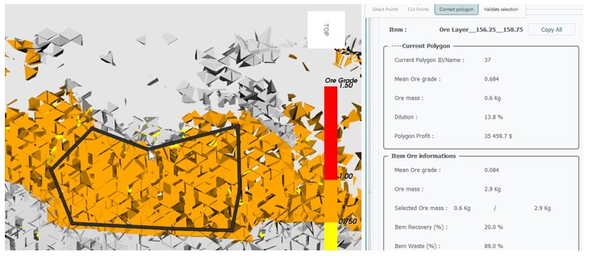
9.8 Adapt to Bucket size
A polygon that follows the grade boundary exactly is not diggable: it has corners tighter than the excavator can cut. Adapt to Bucket size re-samples every dig polygon on the selected layer into a smooth closed spline whose vertex spacing matches your bucket width.
Select the layer, then set:
| Field | Default | Range | Meaning |
|---|---|---|---|
| Lengh mini: | 3 | 1–500 | The bucket width in metres. The smoothed polygon gets roughly one vertex per this distance. |
The note under the field reads “Insert the size of the bucket”. Press Apply Interpolation: each outline is re-fitted as a periodic spline passing through the original vertices, its blocks are re-cut against the new shape, and every KPI is updated.
9.9 Configurate STRs Ore
Sometimes the grades in an imported STR are wrong, or missing, or need overriding for a scenario. Configurate STRs Ore (ribbon: Pattern Setup › Ore Characteristics) lets you edit them per polygon.
Select an ore line's Z = … bench-level node — not the root, not an individual polygon. The editor Edit Ore Grades for Polygons opens:
- Left: a table with Polygon ID, Vertices Count and an editable Ore Grade column.
- Right: a plan view of every polygon at that level, filled by grade and labelled with its index. Clicking a table row highlights the matching polygon in red.
Set Grade to All applies one value to every polygon at the level — useful for a waste level, or for zeroing a level you want excluded. Validate commits and re-colours the ore line.
9.10 The Ore KPI tab
The right-hand pane reports the numbers for whatever is selected. Its header shows Item : with the object type, and Copy All copies the whole panel to the clipboard as tab-separated text ready to paste into Excel.
| Group | Field | Unit | Meaning |
|---|---|---|---|
| Item Ore informations | Mean Ore grade : | g/T | Volume-weighted mean grade of the object. |
| Ore mass : | Kg | Contained metal. | |
| Profit : | $ | Revenue less processing cost. Shown for polygons. | |
| Selected Ore mass : | Kg | Sum over the layer's dig polygons, over the layer's own total. | |
| Item Recovery (%) : | % | The headline number — the proportion of the layer's ore captured by your dig polygons. | |
| Item Waste (%) : | % | Dilution: the proportion of the object's volume below the cut-off. | |
| Selected ore Profit : | $ | Sum of the dig polygons' profit. | |
| Rock mass informations | Selected Volume : | m³ | Sum over the children, over the item's own volume. |
| Selected Volume : (second row) | % | Volume recovery — the proportion of the item's volume captured by its children. The caption is duplicated: this row is the percentage, the one above is the pair of volumes. | |
| Item Volume : | m³ | Total volume. | |
| Item Mass : | Tons | Total tonnage. | |
| Number of tetras : | elements | Element count — a proxy for model resolution. |
The User parameters group echoes the four global values driving all of it: Ore Rate : in $/g, Processing price : in $/T, Cutoff grade : in g/T and Rock density : in g/cm³. Change them in Configurate (section 12.1).
Hide / Show Waste
The toggle on toolbar row 2, or H, hides every cell below the cut-off grade — across all loaded meshes at once, regardless of what is selected. It is the fastest way to see the shape of an ore body inside a layer before cutting.
10Analytics & Reporting
Four analysis windows turn the model into deliverables. All live in the ribbon under Blast Assessments.
10.1 Show results
Show results (shortcut R) is the dig-polygon summary — the document you hand to the pit. Select a layer and press R; a window titled Summary Results opens with one tab per layer of the blast plus a final All Results tab.
Each layer tab shows a plan view above a table. In the plan view every dig polygon is filled in its grade colour, outlined in black with a marker on each vertex, and labelled at its centroid; the layer's outline is drawn as a dotted hull.
The table, in a group box titled BlendORE Polygons:
| Column | Unit | Meaning |
|---|---|---|
| (colour swatch) | — | The polygon's grade band. |
| Polygon | — | Polygon name. |
| Volume | m³ | Volume of the dig block. |
| Tonnes | t | Tonnage. |
| Ore Grade | g/T | Volume-weighted mean grade. |
| Waste (%) | % | Dilution. |
| Profit | $ | Revenue less processing cost. |
A bold TOTAL row closes each table. Volume, tonnes and profit are summed; grade and waste are volume-weighted averages, not plain means — so the total grade is the grade of the combined material, which is what you want.
Each table has a Copy button that puts the whole thing, headers included, on the clipboard tab-separated; Ctrl+C copies just the current selection.
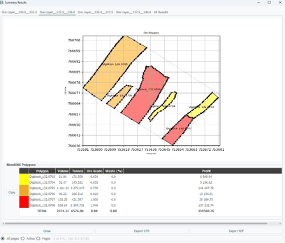
Exporting
| Button | Produces |
|---|---|
| Export STR | The current tab's polygons as a Surpac-style .str, with volume, tonnage, grade, density and polygon ID per ring — the file you load back into your mine-planning package. Default name Layer_<tab name>.str. |
| Export PDF | A formatted report — see below. |
Choose the scope with the radio buttons before exporting a PDF: All pages (the default), Active for the current tab only, or Pages with a list such as 5;1-3;7,8.
The PDF is titled BlendORE Polygon Analysis Report and contains a cover page, a Simulation Parameters page recording the ore rate, rock density, cut-off grade and processing price used, one landscape page per layer with the plan view and its table, and — in All pages mode — an Overall Summary combining every layer.
10.2 2D Analysis
Where Show results reports on one geometry, 2D Analysis compares two: it quantifies how far the ore boundary moved and how much ore and waste were misclassified as a result. Select two ore lines — typically the pre-blast grade-control polygons and the post-movement polygons from section 10.5.
A small dialog names them — Pre-Movement: and Post-Movement:, with a Swap button. Then the window BlendORE 2D Analysis opens.
Set-up
| Control | Default | Meaning |
|---|---|---|
| Match by ID | selected | Pairs polygon 1 with polygon 1, 2 with 2, and so on. Correct when the post-blast set came from Post-movement polygones, which preserves order. |
| Match by overlap | — | Pairs polygons by geometric overlap. Use it when the two sets were produced independently. |
| Ignore threshold (set to 0) | off | Disables area filtering. |
| Ignore distance filtering | off | Keeps vertex distances below 1 mm, normally discarded as noise. |
| Filtering threshold | 0.1 % | Slider, 0.1–20 %. Discards negligible area differences. |
Press Run 2D Dilution Analysis. Results appear in two tabs, each with one sub-tab per bench level.
2D Dilution Analysis
An overlay plot per level shows the pre-blast and post-blast rings together, with the Ore in Waste Area and Waste in Ore Area shaded. Beside it, the KPI table:
| Column | Meaning |
|---|---|
| Layer (Z) | Bench elevation. |
| Pre ID / Post ID | The matched pair. |
| Waste in Ore (%) | Pre-blast ore area that is no longer ore after movement — ore you will send to waste if you dig the pre-blast polygon. Ore loss. |
| Ore in Waste (%) | Post-blast ore area that was not ore before — ore now sitting outside the pre-blast polygon. Ore you will miss. |
| V Pre (m3) / V Post (m3) | Volumes, area times layer height. |
| ΔV (%) | Signed volume change. |
| Misclass (%) | Filled on the summary row only: material that is simultaneously one polygon's loss and another's gain — genuinely mixed ground. |
A bold SUM row per level gives volume-weighted averages of the two dilution percentages and the level's misclassification figure.
Distance Analysis
Per level, the mean, median and maximum distance each polygon vertex moved, with the overlay and a histogram. This is the plain answer to “how far did the ore move?”.
Exporting
| Button | Produces |
|---|---|
| Export PDF | BlendORE 2D Analysis Report — two pages per level (dilution and distance) plus a Dilution Summary recap table. |
| Export XLSX | A workbook with a Dilution sheet (all nine columns, all levels) and a Distance sheet (mean, median, max per level). |
10.3 Movement Analytics
This answers “how did the blast move, as a whole?” rather than “what happened to this polygon?”. Select a simulated mesh and a design. BlendOre generates 100 points evenly spaced along every borehole axis, pushes them through the displacement field, and opens Blast Movement Analysis Report.
Summary
Overall Movement Statistics — mean, median, max and min for 3D Displacement, XY (Horizontal) and Z (Vertical), in metres. Below it, three histograms of the same three quantities.
Movement by Elevation breaks the movement down by starting elevation, in bins of 2.5 m, 5 m (default), 10 m or a custom size, with columns Z Range (m), Points, Moved, Mean 3D (m), Mean XY (m) and Mean Z (m).
Plots and Heatmap
The Plots tab charts displacement against starting elevation with a smoothed trend. The Heatmap tab maps movement in plan — choose Displacement Type: (3D, XY, Z) and Aggregation: (mean, max, min, median), then Update Heatmap. The Z map is drawn on a diverging red-blue scale centred on zero, so heave and subsidence read at a glance.
Exporting
| Button | Produces |
|---|---|
| Export PDF Report | BlendORE Blast Movement Analysis Report — statistics, the elevation charts, the heatmap and a summary table. |
| Export Excel Data | Sheets Summary Statistics and Elevation Breakdown. |
| Export Raw Data (CSV) | Every point before and after: X_Pre (m), Y_Pre (m), Z_Pre (m), X_Post (m), Y_Post (m), Z_Post (m) at six decimals — for your own analysis. |
openpyxl library. If it is missing you get a Missing Dependency message; use the PDF or CSV export instead.10.4 Point tracking
Where did these specific points end up? Use this for blast movement monitor positions, survey marks, or any list of coordinates you want tracked through the blast.
Select a single simulated mesh and run Point tracking. A file dialog asks for a CSV of points — Points Files (CSV / ';' delimiter) (*.csv) — and the column mapper opens so you can identify the X, Y and Z columns.
Each point is moved by an inverse-distance interpolation over its five nearest tetrahedra. The result window, Position of points after movement, is a six-column table:
| Before | After | ||||
|---|---|---|---|---|---|
| X Before | Y Before | Z Before | X After | Y After | Z After |
Save As exports it as CSV or TXT.
10.5 Post-movement polygones
The command that closes the loop between the simulation and grade control. Select a simulated mesh and the pre-blast ore line, then run Post-movement polygones.
Every vertex of every ore polygon is pushed through the displacement field, producing a new ore line named <name>_move, tagged as post-blast, keeping the original grades, densities and layer heights. There is no dialog — it runs immediately.
These polygons are the practical output of the whole study. From here you can:
- run 2D Analysis against the pre-blast set to quantify the dilution (section 10.2);
- use them with Automated Cut with Polygons to cut dig blocks on the moved model (section 9.6);
- export them as STR straight back to your grade-control package (section 13.1).
10.6 The report information dialog
Every PDF export first asks for its cover-page metadata, in a dialog titled Report information.
| Field | Default |
|---|---|
| Project name | The object's name |
| Blast / analysis | Blast_<YYYYMMDD> |
| Client · Location · Reference | empty |
| Contractor | EPC Groupe |
| Report date | today |
| Operation date & time | now — set this to the actual blast time |
| Known authors | A picker, shown only if you have registered authors in Settings › Report Authors |
| Author · Author title | the signed-in user · GTS |
| Client logo | empty — Browse… for a PNG, JPG or BMP |
All BlendOre PDFs share the same layout: a cover page with the product and company logos, the report title, the project and blast names, and a box carrying the contractor, location, client and blast date, followed by a signature block. Every content page repeats the project name and page number, and tables that overflow are split across pages with the header row repeated.
11Viewer Tools & Filters
The filters and tools in this chapter are general-purpose: they let you look inside a model, isolate part of it, measure it and check its statistics. Most are disabled until a suitable object is selected.
11.1 Display modes and scalars
| Mode | Shows | Use for |
|---|---|---|
| Surface | Filled surfaces, no edges. | Presentation and screenshots. |
| Wireframe | Edges only. | Seeing through the model to what is behind. |
| Surface with Edges | Filled surfaces with cell edges drawn. | Judging mesh resolution — the everyday choice when checking a mesh. |
| Points | Vertices only. | Point clouds and dense meshes. |
The mesh-scalars combo chooses which array colours a mesh. It is populated only when the mesh carries more than one scalar — so it stays empty after Mesh 3D and becomes useful after Interpolate or a movement simulation, when Rho (T/m3) and Friction (Pa.s-1) join Ore Grade.
The object-scalars combo chooses which grade column colours a block model — and, importantly, which grade Mesh 3D will carry into the 3D model (section 5.2).
11.2 Threshold
Creates a new object containing only the cells whose scalar falls within a range. Unlike Hide / Show Waste, which is a display filter, this produces a real object you can measure and export.
Select a single mesh with scalars. The dialog Set Threshold Values offers Minimum Value : and Maximum Value :, pre-filled with the data's own range; Apply creates the child object with recomputed volume, grade, mass and dilution.
For a block model coloured by lithology, the dialog is instead Set Block Model Threshold: a checklist of lithology values with a Uncheck All / Check All toggle, so you can isolate one rock type.
| Message | Meaning |
|---|---|
| Threshold can only be applied to a mesh file with scalar values. | The object is not a mesh, or carries no scalars. |
| Please enter a numeric value. | A field is not a number. |
11.3 Clip
Cuts a mesh with an infinite plane and keeps one side. Clip is a mode, not a one-shot command: tick it and an interactive plane widget appears on the object's bounding box, with a Clipper parameters group box in the Properties tab.
- Select a single mesh and tick Clip.
- Drag the plane's handle in the 3D view. The model is clipped live as a preview, and the Origin and Normal fields update.
- For an exact plane, type the six values and press Set plane values.
- Press Clip in the group box to create the result — a child object named
<name>_clipped. - Un-tick Clip to leave the mode and restore the full object.
Toggle plane hides and shows the handle without leaving the mode.
| Message | Meaning |
|---|---|
| Please enter valid numbers for the origin and normal. | A field is not a number. |
| … The value is either unsupported or outside the bounding box of the last selected object. | The plane you typed does not intersect the object. |
11.4 Slice
Produces a thin cross-section through a mesh. It works exactly like Clip — same plane widget, same Origin / Normal fields, same Set plane values and Toggle plane buttons — but the result is a flattened section named <name>_sliced, carrying the ore grade of the cells it passes through.
Clip and Slice are mutually exclusive: turning one on turns the other off.
11.5 Cell data to point data
Converts scalars stored per tetrahedron into scalars stored per vertex, giving a smoothly shaded model rather than a faceted one. It runs immediately with no dialog and produces a child object named <name>_pointdata.
| Message | Meaning |
|---|---|
| Selected item is not a valid mesh with cell data. | Wrong object type, or no scalars. |
| Filter is already applied. | The scalars are already point data. |
11.6 Rescale Data
Changes the range of the colour map without touching the data — the way to bring out detail in a narrow band of grades.
The dialog Rescale Data Range shows the data's original range and the current colour range, and offers Minimum Value : and Maximum Value : fields with Reset and Apply buttons.
For a point cloud there is an extra Filter points by color control: a gradient swatch with a two-handled range slider.
If the object has no scalars you get Error / “No data available”.
11.7 Downsample and Merge
Downsample data
Reduces a point cloud by voxel grid: the cloud is divided into cubes of the given size and one point is kept per occupied cube. Enabled for a single point cloud, and opened automatically for clouds over a million points on import.
| Field | Default | Range |
|---|---|---|
| Vertice length : | read-only | Current point count |
| New vertice length : | read-only | Filled by Compute |
| Down sampling voxel size : | 0.1 m | 0.03–0.5 m |
Press Compute first — it reports the resulting point count — then Apply. Apply stays greyed out until you have computed, and is greyed out again whenever you change the voxel size.
Merge Point Cloud
Combines two point clouds into one. Select exactly two point clouds; there is no dialog. Exact duplicate coordinates are removed, and the result is a new top-level object named merged_point_cloud.
If one cloud carries colours and the other intensities, you are asked to confirm — “A merge will overwrite the information on the points. Merge?” — and answering Yes merges coordinates only.
11.8 Ruler
Measures a straight-line distance in the 3D scene. Tick Ruler — enabled as soon as anything is selected — and a Ruler group box appears in the Properties tab.
- Right-click the first point. A green marker drops.
- Right-click the second point. A red line joins them and the distance is written at the midpoint.
- Right-click again to start a new measurement.
The group box shows Point 1, Point 2 and Distance, in scene units — metres for survey data. Un-tick Ruler to clear the drawing and exit.
11.9 Show histogram
Plots the distribution of the selected object's active scalar — ore grade, a distance field, point intensity, whatever the scalar combos are currently showing. Enabled for a single object with scalars.
The dialog Histogram has a Number of classes : spin box (5–500, default 100) and two tabs:
| Tab | Contents |
|---|---|
| Histogram | The distribution, with a Mode switch between Count and Frequency(%), and Select Color / Reset Color buttons. A cursor line follows the mouse and reads out the value under it. |
| Synthesis | Count, standard deviation, minimum, maximum, mean and median; a Percentile(%) spin box (default 80) with its computed value; fixed P25, P50, P75 and P95 rows; and a cumulative-frequency plot. |
There is no export button; copy the figures by hand or take a screenshot.
12Settings & Configuration
BlendOre keeps its settings in two places. Configurate holds the handful of numbers that drive every KPI in the application; Settings holds everything else.
12.1 Configurate Parameters
Open it from the toolbar or Tools › Configurate. The dialog is titled Configurate Parameters. It also opens by itself when you import a simulation file (.vtu, .vtk, .blnd), and again at the end of a movement simulation — those are the two moments when getting these values right matters most.
| Group | Field | Default | Unit | Drives |
|---|---|---|---|---|
| Rock parameters | Rock Density ρ (g/cm3): | 2.5 | g/cm³ | Every tonnage figure in the application. |
| Cutoff Grade | Cutoff Grade (g/T): | 0.0 | g/T | The ore/waste split — dilution, recovery, the waste toggle, the automated cut and the mesh. |
| Ore pricing | Ore price (g): | 85.00 | $/g | The revenue side of every profit figure. The two boxes are kept in sync at 31.1034768 g per troy ounce. |
| (paired ounce box) | 2643.80 | $/oz | ||
| Rock mass processing pricing | Processing price: | 20.0 | $/T | The cost side of every profit figure. |
| Polygons orientation | ↓↓ Z+ (Upper level) / ↑↑ Z- (Bottom level) | Upper level | — | How ore polygons are extruded — see section 9.2. |
Apply saves the values and refreshes the User parameters read-outs in the KPI pane. Whenever you open it from the toolbar or Tools › Configurate, it also recomputes every mesh in the tree with the new values — so you can re-price a whole study without re-running anything. (The automatic open on importing a simulation file does not recompute.)
Reset to Default restores 2.5 g/cm³, 85 $/g, 0.0 g/T and 20 $/T.
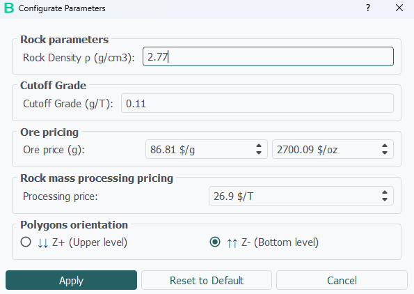
12.2 The Settings dialog
Tools › Settings, or the toolbar button. Six tabs, opening on General, with Apply, Reset and Cancel at the bottom.
General
| Setting | Values | Default |
|---|---|---|
| Theme: | auto, light, dark |
auto |
| Font size: | 5–20 pt | 10 |
| LANGUAGES | English, Español, Français, Indo, Italiano, Português, Türkçe, عربي | English |
| Reconnect to Explore | Button | — |
Font size takes effect immediately across the whole interface — useful on a high-DPI laptop or a control-room screen.
Display
| Setting | Default | Range |
|---|---|---|
| Background Color: | light grey | Any colour |
| Point Color: | dark grey | Any colour |
| Point Size: | 2 | 1–100 |
| Mesh Color: | white | Any colour |
| Mesh Opacity: | 100 % | 0–100 % |
| Cylinder Color: | green | Any colour |
These are the defaults applied to every object; individual objects can still be overridden in the Properties tab. Applying pushes the new values to everything already loaded.
View
| Setting | Default | Range |
|---|---|---|
| Grid Size: | 5 | 1–100 |
| Lock Camera: | off | Blocks rotation; pan and zoom remain |
| Hide Axis: | off | Hides the axes marker |
| Show Grid: | off | — |
| Show Bounding Box: | off | — |
Report Authors
A two-column table of Name and Title with Add row and Remove row. Entries appear as quick picks in the report-information dialog (section 10.6). Empty by default; reports still accept free text.
Output Directory
A Browse button and a read-only path label. See section 12.4.
12.3 Thresholds / Colors
This tab defines the grade bands: the classification used to colour every ore line and mesh, and the band names written into exported STR files.
| Name | Threshold (g/T) | Colour | Meaning |
|---|---|---|---|
W |
0.0 | light grey | Waste |
VLG |
0.01 | blue | Very low grade |
LG |
0.35 | yellow | Low grade |
MG |
0.75 | orange | Medium grade |
HG |
1.0 | red | High grade |
VHG |
1.5 | red | Very high grade |
Each row has an editable name, an editable threshold, a Choose Color button and a Delete button. Add Material classification bin appends a row.
HG and VHG share the same red by default — give them distinct colours if you use both.Validation on Apply, all under the title Invalid value:
| Message |
|---|
| One or more thresholds are not valid numbers. |
| At least one classification bin is required. |
| Classification bin names cannot be empty. |
| Classification bin names must be unique. |
| Threshold values must be strictly ascending. |
On success every loaded ore line is re-coloured with the new bands.
12.4 Output directory
BlendOre creates a folder named BlendORE_Output inside your chosen output directory. Everything the application writes by default goes there: saved projects, exported objects, report PDFs, STR exports and simulation results.
On first run the output directory defaults to the folder the application was launched from. Change it in Settings › Output Directory › Browse.
Each movement simulation with Create Output Folder enabled adds a sub-folder named from the date, time, input file names and physical parameters:
| Path | Contents |
|---|---|
BlendORE_Output/BLDR_<date_time>_<geom>_<design>_p0_…/ |
The run folder. |
simulation_log.txt |
Every parameter used, plus the full progress log. Written when Save Traceability is ticked. |
<name>_Pre_Move.blnd |
The pre-blast model, if requested. |
<name>.blnd |
The post-blast model, if requested. |
12.5 Where settings are stored
BlendOre stores its settings in an entry it creates in the Windows registry, under the current Windows user. They are therefore per user and per machine.
| Consequence | Detail |
|---|---|
| Shared across the suite | Theme, font size, language, output directory, colours and report authors are shared with the other Simulation Tools Suite applications running under the same Windows account. |
| Survives uninstall | Removing BlendOre does not delete the settings; reinstalling picks them up again. |
| Not portable | Settings do not follow you to another machine or another Windows account. Grade bands and report authors have to be set up again. |
| Silent on failure | If the registry cannot be read or written, BlendOre runs on in-memory defaults without telling you. Settings that will not stick between sessions point to a permissions problem. |
Two settings are deliberately not persisted and reset every session: Save pre-movement simulation (to off) and Save post-movement simulation (to on).
13Saving & Exporting
13.1 Save selected element
This is how you get a single object out of BlendOre. Select exactly one object in the tree and click the disk button in the File repertory : header.
A Save As dialog opens in the BlendORE_Output folder, with a default name combining the object name and a timestamp. The formats offered depend on the object type:
| Object | Formats | Contents |
|---|---|---|
| MSH Mesh | .blnd, .vtu, .obj |
.blnd keeps everything, including the movement data. .vtu keeps geometry plus the displayed scalar, for ParaView. .obj is the outer surface only. |
| GEO Point cloud | .txt, .csv, .las |
.csv and .txt are identical: semicolon-separated with the header x; y; z; intensity; r; g; b. .las is a standard LAS 1.2 file. |
| BLS Design | .json |
The full design in BlendOre's own JSON schema — holes, loading decks, products and delays. Round-trips back into BlendOre. |
| BLK Block model | .str |
Each block as its four top-face corners with grade, density and lithology. |
| ORE Ore line | .str |
The polygons with their grades and IDs. |
On success a box confirms the full path. On failure you get Error with the reason.
.blnd asks whether to include the animation data: “Do you want to save the animation data (makes the file larger and decrease performance)?” The default is No. Answer Yes only if you will want to replay the movement from that file.Exporting dig polygons
The dig polygons that grade control actually needs come from the Show results window, not from here: its Export STR button writes the current layer's polygons with volume, tonnage, grade and density per ring (section 10.1). Post-movement ore lines are exported through Save selected element as above.
Y, X, Z column order, not X, Y, Z. Configure your import mapping accordingly — the header line in the file states the order.13.2 Export formats at a glance
| You want | Do this | Format |
|---|---|---|
| Dig polygons for the mine-planning package | Show results › Export STR | .str |
| Post-movement ore lines | Select the _move ore line › disk button |
.str |
| A formatted dig-polygon report | Show results › Export PDF | .pdf |
| Dilution figures for a spreadsheet | 2D Analysis › Export XLSX | .xlsx |
| Movement statistics | Movement Analytics › Export Excel Data | .xlsx |
| Raw before/after point coordinates | Movement Analytics › Export Raw Data (CSV) | .csv |
| Tracked monitor positions | Point tracking › Save As | .csv / .txt |
| The timing sequence | Sequence editor › Export CSV | .csv |
| The blast contour | Delimit polygons, then answer Yes | .txt / .str |
| A model for ParaView | Select the mesh › disk button | .vtu |
| The whole session | Export button on the toolbar | .bldr |
13.3 Project files
A project file captures your entire session: every object in the tree with its geometry, scalars, colours and settings, plus the four economic parameters. Save one with the Export button on the toolbar; reopen it through Import › Project.
What is kept
The complete object tree with its hierarchy and names, and for every object: geometry, translation vectors, all scalar arrays and their labels, colours, point size, opacity, display mode; design hole configurations with loading plans and delays; ore-line grades, densities, layer heights and the pre/post-blast tag; dig-polygon outlines; simulation displacement fields and animation data; and the ore rate, rock density, cut-off grade and processing price.
What is not kept
| Not saved | Consequence |
|---|---|
| Application settings | Theme, language, colours, output directory and STR column defaults live in the registry, not the project. |
| Grade bands and colours | A project reopened after you edited the bands is re-coloured with the current ones. |
| Camera position | The view is reset on load. |
| Open analysis windows | Re-run the reports after loading. |
Practical notes
- The project is self-contained — the source files are not re-read, so it opens on a machine that does not have them. The recorded file paths may be stale.
- Projects containing large point clouds or simulations take a while to save and load, and the progress bar advances only once per top-level object, so it can appear stalled. Let it finish.
- The format is versioned. A project written by a different version may refuse to open with an incompatibility message.
.bldr as ordinary working data, not as a secure container. It is compressed but not encrypted, so do not rely on it to protect confidential grade information. For the same reason, only open project files from colleagues you trust.14Reference
14.1 Units and formulas
| Quantity | Unit | Notes |
|---|---|---|
| Coordinates, lengths, distances | m | Scene units follow the survey data. |
| Ore grade | g/T | Grams per tonne. |
| Rock density | g/cm³ in settings, T/m³ in the movement dialog | Numerically the same value. |
| Volume | m³ | |
| Mass | Tons in the KPI pane, Kg for ore mass | |
| Ore price | $/g (and $/oz) | 1 troy ounce = 31.1034768 g. |
| Processing price | $/T | |
| Delays, time step | ms | |
| Burden relief | ms/m | |
| Explosive density | g/ml | |
| Detonation velocity | km/s | |
| Detonation pressure | GPa | |
| Rock friction / damping | Pa·s⁻¹ | |
| Hole diameter | m | Accepted range 0.01–0.5 m. |
How the KPIs are computed
| Quantity | Definition |
|---|---|
| Mean ore grade | Volume-weighted mean of the cell grades — Σ(grade × volume) / Σvolume. Cells below the cut-off are set to zero first. |
| Mass | rock density × volume. |
| Ore mass | grade × mass — the contained metal. |
| Dilution / Waste (%) | waste volume / total volume × 100. A volume ratio, not a cell count. The split is at the cut-off, or at 0.01 g/T if the cut-off is lower — so with the default cut-off of 0.0 the dilution figures are computed against 0.01, not against 0. |
| Profit | revenue − processing price × tonnage, where revenue is the contained metal at the ore rate. |
| Item Recovery (%) | Σ(child ore mass) / item ore mass × 100 — the proportion of a layer's ore captured by its dig polygons. |
| Detonation pressure | P₀ = ρ × VoD² / 8. |
14.2 Supported file formats
| Format | In | Out | Notes |
|---|---|---|---|
.obj |
Geometry | Mesh | Textures loaded when a .mtl and its images sit beside the file. |
.stl |
Geometry | — | Import only. ASCII STL only — a binary STL loads as an empty object. |
.las |
Geometry | Point cloud | Intensity becomes the point scalar. |
.dxf |
Geometry, Design, Ore Line | — | Points, lines, polylines, faces. |
.dtm |
Geometry | — | Only 8-field rows are read. |
.csv / .txt |
Everything | Point cloud, analytics | Through the column mapper. Default delimiter semicolon. |
.xyz / .asc |
Geometry | — | Via the All Files filter. |
.json |
Design | Design | The native design format; round-trips. |
.xlsx |
Design | Reports | Column names matched by alias. Block models are imported from CSV, not Excel. |
.xml |
Design | — | IREDES DrillRig. Via All Files. |
.str |
Ore Line, Design, Contour Cut | Ore line, block model, dig polygons, contour | The main grade-control exchange format. Exports use Y, X, Z column order. |
.vtu / .vtk |
Simulation | Mesh | Tetrahedral cells and cell data only. |
.blnd |
Simulation | Mesh | BlendOre's own container; the only format that keeps everything. |
.bldr |
Project | Project | The whole session. |
.pdf |
— | All reports |
14.3 Command availability
Nearly every command is enabled by a particular selection. When a button is greyed out, this is the table to check.
| Command | Requires selected |
|---|---|
| Mesh 3D | 1 GEO + 1 ORE or BLK (+ optionally 1 BLS); or 1 GEO alone, or 1 GEO + 1 BLS, for a mesh without grade |
| Update object vizualisation | 1 GEO carrying faces or polylines |
| Select polygon points · Interpolate | 1 MSH. Interpolate also needs a closed polygon |
| Rock characterization data | Nothing — always available |
| Time Sequences | 1 BLS |
| Delimit polygons † | 1 BLS (+ optionally 1 ORE) |
| Configurate STRs Ore | An ore line's Z = … level node |
| Launch BlendORE Simulation | 1 MSH + 1 BLS + 1 ORE/BLK; or 1 MSH (already graded) + 1 BLS |
| Adjust Post Blast Plus | 1 MSH with displacement + 1 GEO |
| Play · Stop | 1 MSH carrying animation data |
| Configure Layers | A simulated mesh |
| Select Points · Cut Points | 1 GEO point cloud, or 1 mesh that is a blast site, layer or dig block; Cut Points appears once selection mode is on |
| Automated Cut · Automated Cut with Polygons | A layer mesh; the latter also needs 1 ORE |
| Contour Cut | Exactly 1 blast-site mesh |
| Correct polygon | 1 layer that already holds at least one cut |
| Adapt to Bucket size † | 1 layer with dig polygons — enabled for any layer; the polygons are checked when you run it |
| Show results | 1 layer |
| 2D Analysis | 2 ore lines |
| Movement Analytics † | 1 MSH with displacement + 1 BLS |
| Point tracking † | 1 simulated MSH. With any other selection it does nothing and says nothing |
| Post-movement polygones † | 1 MSH + 1 ORE |
| Absolute distance Z · Euclidean distance X,Y,Z Plus | 2 GEO |
| Threshold † | 1 MSH with scalars, or a BLK — enabled for any single mesh; the scalars are checked when you run it |
| Clip · Slice · Cell data to point data | 1 MSH |
| Rescale Data | 1 object with scalars |
| Downsample data | 1 GEO |
| Merge Point Cloud | Exactly 2 GEO |
| Ruler | Any selection |
| Show histogram | 1 object with scalars |
| Save selected element † | Exactly 1 object — the button is never disabled and acts on the last-selected object |
14.4 Default values
| Setting | Default | Range | Where |
|---|---|---|---|
| Rock density | 2.5 g/cm³ | 1.5–3.5 in the movement dialog | Configurate |
| Cut-off grade | 0.0 g/T | any | Configurate |
| Ore price | 85.00 $/g | 0–1 000 000 | Configurate |
| Processing price | 20.0 $/T | 0–1 000 000 | Configurate |
| Polygon orientation | Upper level (downward) | — | Configurate |
| Characteristic length | 2.5 m | slider 1.2–3.5; clamped to 1.5–3.5 | Make Mesh |
| Minimum Z | 130 m | −1000–5000 | Make Mesh |
| Max cutting distance | 20 m | 10–50 | Make Mesh |
| Layer height | 2.5 m | 0.01–10000 | Make Mesh, Configure Layers |
| Number of layers | 4 | — | Configure Layers |
| Minimum polygon area | 50.0 m² | — | Automated Cut |
| Bucket size | 3 m | 1–500 | Adapt to Bucket size |
| Blast contour buffer | 0.5 m | 0–9999 | Delimit polygons |
| Explosive density | 1.20 g/ml | 0.01–3.00 | Calculate Movement |
| Detonation velocity | 5.00 km/s | 0.10–12.00 | Calculate Movement |
| Initial pressure | 3.75 GPa (computed) | 0–1000 | Calculate Movement |
| Rock friction / damping | 0.5 Pa·s⁻¹ | 0.1–0.8 | Calculate Movement |
| Compaction / swell factor | 1.4 | 0.1–2.0 | Calculate Movement |
| Time step | auto-computed | 0.01–100 ms | Calculate Movement |
| Burden relief | 10 ms/m | 1–50 | Sequence editor |
| Direction | 45° | −180–180 | Sequence editor |
| V-wing angle | 45° | 0–89 | Sequence editor |
| Inter-level delay | 8.0 ms | ±10000 | Sequence editor |
| Minimum interval | 8.0 ms | 0–10000 | Sequence editor |
| Downsample voxel size | 0.1 m | 0.03–0.5 | Downsample data |
| Point size | 2 | 1–100 | Settings › Display |
| Font size | 10 pt | 5–20 | Settings › General |
| Histogram classes | 100 | 5–500 | Show histogram |
| STR columns | X 3, Y 2, Z 4, grade 9, density 6 | — | STR Column Configuration |
15Troubleshooting & FAQ
15.1 Start-up and sign-in
https://explore.epc-groupe.com/ at that moment, not at every launch. On a site with intermittent connectivity, sign in while you have a link.BlendOre plus or BlendOre Predict.15.2 Import problems
.str carries per-polygon grades.15.3 Meshing problems
15.4 Simulation problems
_Move_Predict object, not a layer or a derived object. If you reloaded from a .blnd, the data was only saved if you answered Yes to the animation-data question on export.15.5 Greyed-out commands and other surprises
Y, X, Z order. Adjust your import mapping; the header line in the file states the order.16Glossary
16.1 Terms
| Term | Meaning in BlendOre |
|---|---|
| Blast contour | The outline of the pattern in plan — the convex hull of all collars and toes, optionally buffered outward. Produced by Delimit polygons. |
| Blast site | The object type given to a mesh once it has been through a movement simulation. Layers are cut from it. |
| Bulking / swell factor | The vertical expansion of the muckpile. Above 1 the rock swells and heaves; below 1 it compacts. |
| Burden relief | The timing gradient in ms/m along the direction of blast progression — how quickly the firing front advances across the ground. |
| Characteristic length | The target edge length of a tetrahedron; the resolution of the 3D model. |
| Cut-off grade | The grade below which material is waste. Drives dilution, recovery, profit, the waste toggle, the automated cut and the mesh. |
| Deck / level | One charge or stemming segment within a hole. A hole with three decks has three detonator levels. |
| Digblock | The object created by cutting a dig polygon out of a layer. Carries its own volume, tonnage, grade, dilution and profit. |
| Dig polygon | A closed ring on a layer defining what the loader should dig as ore. |
| Dilution | The proportion of a volume that is below the cut-off — waste that will be mined as ore. Shown as Waste (%) in reports. |
| Displacement field | The per-tetrahedron movement vector produced by the simulation. The core output. |
| Explore | EPC Groupe's web platform. BlendOre's identity provider and licence authority. |
| Free face | An unconfined surface the blast can throw rock towards. Detected automatically and given a strongly amplified throw. |
| Heave | Vertical rise of the muckpile. Optionally isolated as its own layer. |
| Isochrone | A contour of equal detonation time across the pattern. Rock moves perpendicular to the isochrones. |
| Layer | A horizontal slice of the simulated model, corresponding to a bench flitch the loader will dig. |
| NONEL | Non-electric initiation: a network of surface connectors with fixed delays (17, 25, 42, 65, 100 ms). |
| Ore line | A grade-control polygon: a closed ring at one elevation carrying an ore grade and usually a density. Imported from .str. |
| Polygon orientation | Whether an ore polygon's Z is the top or the bottom of the slab it represents. See section 9.2. |
| Recovery | The proportion of a layer's contained ore captured by its dig polygons. |
| Scalar | A value attached to every cell or vertex — ore grade, density, friction, distance. Selected in the scalar combos and shown by the colour bar. |
| STR | A Surpac-style string file. The main exchange format for polygons between BlendOre and mine-planning packages. |
| Tetrahedron | The elementary volume of the 3D model. Everything — grade, movement, tonnage — is computed per tetrahedron. |
| Time step (dt) | The integration interval of the movement solver, in milliseconds. Must be short enough that interacting holes do not share a step. |
| Traceability log | simulation_log.txt — the record of every parameter used in a simulation run. |
| Translation vector | The offset subtracted from survey coordinates so BlendOre can work in local coordinates without precision loss. |
| VoD | Velocity of detonation, in km/s. With density it determines the detonation pressure. |
| Waste | Material below the cut-off grade. |